La Guía de Piloncillo para Wii U
Esta guía te enseña paso a paso desde cero a instalar aplicaciones y juegos en tu consola. No importa si es nueva o si fue modificada previamente.
Hackear la Wii U, entre otras cosas, te permite hacer lo siguiente:
- Instalar y cargar juegos (así como sus DLCs y actualizaciones).
- Hacer y restaurar copias de los guardados de los juegos.
- Instalar y cargar juegos de sistemas más antiguos con varios emuladores.
- Instalar y cargar juegos de una región diferente (región libre).
- Seguir jugando en línea.
Esto necesitas para hacer esta guía con éxito:
- Una Wii U con acceso a internet.
- Una tarjeta SD de 4 GB o mayor (se recomienda una de 32 GB para instalar los juegos más pesados).
- Un dispositivo para colocar archivos en la tarjeta SD.
Esta guía funcionará en todas las Wii U de todas las regiones con firmware 5.5.5 o 5.5.6. Lo ideal es que actualices a la última versión antes de modificar la consola.
Antes de empezar
Debes saber que modificar cualquier sistema implica la posibilidad de producir un falló irreversible (brick). En el caso de la Wii U son muy especificos y lejanos los escenarios de un falló irreversible, pero sigue siendo una posibilidad.
Si completas la guía correctamente no perderás ningún juego y la consola terminará con todo lo que tenía al comienzo (juegos de Wii U, partidas guardadas, NNID, etc., se conservarán).
Si la Wii U tiene un hack se recomienda desinstalarlo antes de seguir adelante.
- Usuarios con Coldboot Haxchi (CBHC): Vayan a la sección Desinstalar Coldboot Haxchi correctamente.
- Usuarios con Haxchi: Desinstalen la aplicación Haxchi desde la gestión de datos en la configuración de la consola, hagan una copia de todo el contenido de la tarjeta SD y formateen la tarjeta SD como se indica más adelante en la guía.
- Usuarios con Indexiine: Vayan a la sección Desinstalar Indexiine correctamente.
- Usuarios con Webhack: Hagan una copia de todo el contenido de la tarjeta SD y formateen la tarjeta SD como se indica más adelante en la guía.
- Si no sabes que hack tiene tu Wii U consulta la sección Identificar hack.
Desactivar las funciones en modo de reposo
La consola indica que está trabajando en modo de reposo cuando el LED de POWER cambia de rojo a naranja. Una consola con las funciones en modo de reposo activadas se activa periódicamente para descargar información de utilidad y actualizaciones del sistema, además permite usar el menú de inicio rápido en el GamePad.
Aunque el fin del soporte de la Wii U por parte de Nintendo está próximo es posible que la compañía aún lance actualizaciones para la consola. Las actualizaciones 5.5.3 a 5.5.6 se lanzaron después de que se descontinuó la fabricación de la Wii U, por lo que desactivar las funciones en modo de reposo para impedir la actualización automática de la consola es una acción recomendada. Además, desactivar el menú de inicio rápido facilita la identificación de Autobooting PayloadLoader.
Para desactivar las funciones en modo de reposo
- Entra en la Configuración de la consola
- Selecciona Ajustes de apagado.
- Toca en el bloque de Funciones en modo de reposo.
- Toca en No y después en Aceptar.
- Toca en Aceptar.
- Toca en Atrás o presiona B.
- Toca en Salir o persona B.
Ahora al apagar la consola no trabajará en modo de reposo y el LED de POWER no cambiará de rojo a naranja.
Bloquear las actualizaciones
Todos los exploits de Wii U actualmente conocidos pueden ser parcheados por una actualización del sistema. Aunque el fin del soporte de la Wii U por parte de Nintendo está próximo es posible que la compañía aún lance actualizaciones para la consola. Las actualizaciones 5.5.3 a 5.5.6 se lanzaron después de que se descontinuó la fabricación de la Wii U, por lo que bloquear las actualizaciones sigue siendo una acción recomendada.
Si bien Tiramisu ya tiene una funcionalidad de bloqueo de actualizaciones, se recomienda eliminar la carpeta update del sistema de la Wii U para bloquear de manera definitiva las actualizaciones del sistema de consola. Si llegaste a ver una pantalla de advertencia roja mientras Tiramisu iniciaba, quiere decir que la carpeta update aún existe y se recomienda eliminarla utilizando la guía de a continuación, los mismos pasos se aplican para restaurar la carpeta update si deseas actualizar la Wii U posteriormente. Si en un futuro sale una actualización para el sistema de la Wii U, el proceso de descarga de la actualización se detendrá con un código de error 105-301X.
Eliminar la carpeta update del sistema de la Wii U
- Conecta la tarjeta SD de la Wii U a una PC (o teléfono inteligente).
- Descarga la versión más actual de UFDiine.
- Debes descargar el archivo
ufdiine.zip. - Descomprime el archivo
ufdiine.zip, copia la carpetawiiua la raíz de la tarjeta SD.
- Extrae la tarjeta SD de forma segura del dispositivo que usaste para hacer la copia de archivos e introdúcela en la ranura de la Wii U.
- Enciende la Wii U y abre el Homebrew Launcher.
- Navega a través del Homebrew Launcher y carga UFDiine.
- Presiona el botón A para eliminar la carpeta de actualización.
- UFDiine debe indicar que Update folder is deleted confirmando que la carpeta update fue eliminada.
- UFDiine indica que Update folder exists cuando la carpeta update es restaurada.
- Con Update folder is deleted están completamente bloqueadas las actualizaciones.
- Presiona el botón HOME para salir de UFDiine.
Introducción a Tiramisu

¿Qué es Tiramisu?
Tiramisu es un environment (entorno) homebrew para Wii U. Sus módulos permiten cargar un CFW (versión modificada de Mocha CFW), instalar el Homebrew Launcher en Mii Maker (Editor de Mii) y proporciona un menú de inicio automático.
Junto con PayloadLoader, es una alternativa a Coldboot Haxchi (CBHC) segura y gratuita, con algunas características adicionales como soporte completo para el menú de inicio rápido del GamePad y bloqueo parcial de actualizaciones.
Tiramisu es un entorno que debe cargarse por medio del Environment Loader.
Se recomienda realizar un arranque automático de Environment Loader a través de Autobooting PayloadLoader.
Tiramisu no es un hack. El hack formalmente sería "Autobooting PayloadLoader → Environment Loader → Tiramisu" (o "PayloadLoader → Environment Loader → Tiramisu").
¿Conviene actualizar de un hack anterior a Tiramisu?
Sí. En conjunto Environment Loader, PayloadLoader y Tiramisu tienen casi todas las ventajas de los anteriores hacks y ninguna de sus desventajas.
Paginas "oficiales" del proyecto
- [RELEASE] Tiramisu Environment | Free CBHC
- Tiramisu para tu café
- Wii U Hacks Guide
- FailST aka contenthax 2.0
- Tiramisu
Registro de cambios
31 de diciembre de 2021 - 10:09 p.m.
- Lanzamiento.
1 de enero de 2022 - 1:29 p.m.
- Arranque automático: Arregla el inicio rápido en applets.
- HBLInstallerWrapper: Corrige el lanzamiento de canales que ejecutan sus propios exploits. (por ejemplo, el Homebrew Launcher Channel y cualquier forwarder basado en este canal como el forwarder de Retroarch).
1 de enero de 2022 - 2:54 p.m.
- Corrige un problema de pantalla negra en la TV al iniciar en frío el entorno o en el menú de inicio automático.
3 de enero de 2022 - 4:26 p.m.
- MochaPayload: Ejecuta la llamada del sistema del kernel con permisos completos del kernel. (gracias @Gary#4139).
- MochaPayload: Parcha CheckTitleLaunch para ignorar la verificación del GamePad, esto permite lanzar títulos que normalmente requieren un GamePad.
- HBLInstallerWrapper: Parcha ACPGetTitleMetaXmlByDevice del proceso HomeMenu para permitir el arranque en frío del Homebrew Launcher sin un GamePad.
- Homebrew Launcher: Compatibilidad con esquemas de control adicionales (Pro Controller, etc.) (gracias @Gary#4139 y @neoninteger#6152).
5 de enero de 2022 - 3:30 p.m.
- Algunas personas informan fallas al iniciar juegos mientras tienen el modulo
50_hbl_installer.rpx. Resulta que había un error en el código de sd_loader de hace 6 años que nadie había notado antes. Algunas aplicaciones/juegos sólo se iniciaban si se ejecutaba el Homebrew Launcher antes, pero esto ahora se ha solucionado. - Corrige un problema que había al iniciar algunas aplicaciones, como los ajustes de Amiibo, cuando no se ejecutaba el Homebrew Launcher antes.
10 de enero de 2022 - 10:08 p.m.
- Corrige un softlock al ejecutar Mass Effect 3.
16 de enero de 2022 - 12:16 a.m.
- Espera a que los dispositivos USB realmente se activen.
- Reduce el glitch gráfico cuando se inicia el menú de Wii U.
18 de enero de 2022 - 2:14 p.m.
- Muestra la pantalla de selección de usuario cuando la consola inicia con el Homebrew Launcher y no hay una cuenta predeterminada configurada.
22 de enero de 2022 - 2:18 p.m.
- AutobootModule: Corrige el arranque en otras versiones de vWii HBL distintas al The Homebrew Channel - open source edition (Gracias @GaryOderNichts).
Créditos
- Maschell (EnvironmentLoader, HBLInstallerWrapper, MochaPayload, PayloadLoader + PayloadLoaderInstaller, AutobootModule, ...)
- GaryOderNichts (AutobootModule, PayloadLoaderInstaller)
- dimok (Mocha CFW / Homebrew Launcher)
- pwsincd (Logo)
Actualizar Tiramisu
Tiramisu es extremadamente simple de actualizar, sólo debes descargar los archivos más recientes y remplazar los anteriores en la tarjeta SD.
Necesitas los archivos más recientes de Tiramisu
- Este enlace lleva al sitio oficial: Tiramisu para tu café.
- Dentro del sitio debes tocar en el botón Download Tiramisu para iniciar la descarga de un archivo
.zip. - Además, necesitas la versión más actual del módulo Sigpatches.
- Únicamente necesitas el archivo
01_sigpatches.rpx.
Instalación
- Descomprime el archivo
.zipde Tiramisu. - Copia la carpeta
wiiuy el archivoversions.jsona la raíz de la tarjeta SD. - Tu tarjeta SD debe quedar como esta imagen:
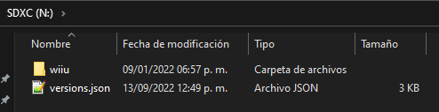 - Copia el archivo
01_sigpatches.rpxa la carpetasd:/wiiu/environments/tiramisu/modules/setup.
- Extrae la tarjeta SD de forma segura del dispositivo que usaste para hacer la copia de archivos e introdúcela en la ranura de la Wii U con la consola apagada.
- En este punto ya finalizaste la actualización de EnvironmentLoader y Tiramisu. La próxima vez que cargue el entorno de Tiramisu cargará con los archivos más actuales.
Prepara la tarjeta SD para Tiramisu
La Wii U sólo reconoce tarjetas SD formateadas en FAT32, así que el primer paso es formatear la tarjeta SD en FAT32. Se recomienda un tamaño de unidad de asignación (allocation unit size) de 32 kilobytes (32768). Deja la etiqueta del volumen (volume label) en blanco ya que poner una puede causar problemas con algunas aplicaciones. Para tarjetas SD mayores a 32 GB debes formatear usando GUIFormat.
La primea imagen corresponde a la aplicación de formateo de Windows, para tarjetas SD de 4 GB hasta 32 GB. La segunda imagen corresponde a la aplicación GUIFormat, para tarjetas SD de 4 GB hasta 2 TB.

Ahora necesitas los archivos más recientes de Tiramisu
- Este enlace lleva al sitio oficial: Tiramisu para tu café.
- Dentro del sitio debes tocar en el botón Download Tiramisu para iniciar la descarga de un archivo
.zip. - Además, necesitas la versión más actual del módulo Sigpatches.
- Únicamente necesitas el archivo
01_sigpatches.rpx.
Instalación
- Descomprime el archivo
.zipde Tiramisu. - Copia la carpeta
wiiuy el archivoversions.jsona la raíz de la tarjeta SD. - Tu tarjeta SD debe quedar como esta imagen:
- Copia el archivo
01_sigpatches.rpxa la carpetasd:/wiiu/environments/tiramisu/modules/setup.
- Extrae la tarjeta SD de forma segura del dispositivo que usaste para hacer la copia de archivos e introdúcela en la ranura de la Wii U con la consola apagada.
- Opcionalmente desconecta el dispositivo USB de la Wii U antes de continuar, puedes volver a conectar el dispositivo USB en cualquier momento después de instalar PayloadLoader en la consola.
Exploit del navegador
El exploit del navegador es el punto de entrada ideal para hacer una copia de seguridad en limpio de la NAND (memoria interna de la consola). Con la tarjeta SD preparada ya tienes lo necesario para ejecutar el exploit.
- Enciende la consola y accede al menú de Wii U. Asegúrate de que la consola tenga acceso a internet para este paso.
- Abre el navegador de internet de la consola.
- Introduce la URL: u.wiidb.de (puedes consultar paginas alternativas aquí).
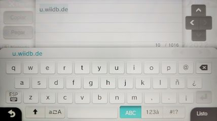 - Al cargar la página por completo mostrará en grande el enlace HAXX.
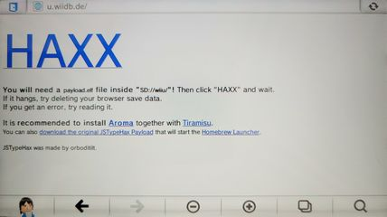 - Toca el enlace HAXX, cuando la pantalla del GamePad se ponga completamente en blanco mantén presionado el botón B hasta que salga un menú (Please choose your payload).
- Acceder a ese menú es necesario para poder hacer el respaldo de la NAND. Si no lograste entrar a ese menú revisa las notas de abajo.
- Ya en el menú Please choose your payload usa las flechas del D-Pad del GamePad para seleccionar
nanddumpery presiona el botón A para iniciar la aplicación.
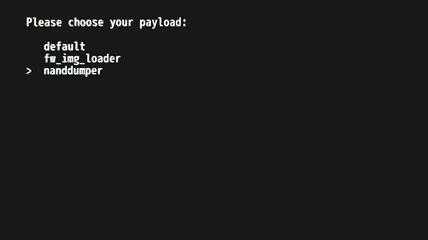
payload.elf dentro de la carpeta sd:/wiiu. Mantén presionado el botón POWER de la consola hasta que se apague, revisa los archivos de la tarjeta SD y vuelve a intentar el exploit del navegador.Si aparece el menú del EnvironmentLoader navega por el menú usando las flechas del D-Pad del GamePad, selecciona installer y presiona el botón A para iniciarlo.
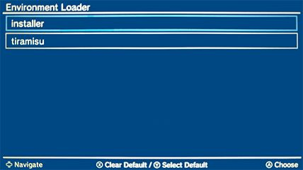
Ahora debes estar en el PayloadLoader Installer, usando las flechas del D-Pad selecciona Exit y presiona el botón A para salir. La consola volverá al menú de Wii U, apaga la consola y vuelve a intentar el exploit del navegador.
Hacer una copia de seguridad de la NAND (memoria interna) de la Wii U
En el caso de que algo salga muy mal restaurar la copia de la memoria interna puede solucionarlo.
- En este punto debes estar dentro de la aplicación NAND Dumper.
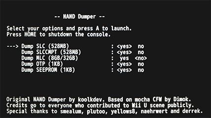 - Usa las flechas del D-Pad del Wii U GamePad para ingresar la configuración deseada.
- Dump SLC (528MB): yes
- Dump SLCCMPT (528MB): yes
- Dump MLC (8GB/32GB): Opcional
- Dump OTP (1KB): yes
- Dump SEEPROM (1KB): yes
- SLC: IOSU y Cafe OS, sistemas operativos del modo Wii U.
- SLCCMPT: IOS, sistema operativo del modo virtual Wii.
- MLC: Juegos, actualizaciones de los juegos, DLCs y archivos de guardado.
- OTP: Valores y keys (claves) de fábrica.
- SEEPROM: Valores y keys (claves) del sistema.
Aquí puedes ver una imagen de los chips de memoria de la consola.
- Presiona el botón A para iniciar el proceso de copia.
- Aparentemente la consola carga el menú de Wii U, pero en unos instantes mostrará el proceso de copiado.
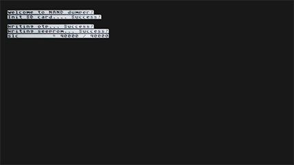
- Cuando se complete el proceso la consola cargará el menú de Wii U.
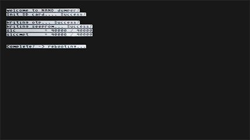 - Apaga la consola, saca la tarjeta SD de la Wii U y ponla a tu PC (o teléfono insteligente) para copiar archivos.
- Copia los archivos
otp.bin,seeprom.bin,slc.binyslccmpt.binde la raíz de la tarjeta SD a una ubicación segura en tu dispositivo. - Si elegiste realizar la copia de MLC, copia los archivos
mlc.bin.part##de la raíz de la tarjeta SD a una ubicación segura en tu dispositivo. - Elimina los archivos
otp.bin,seeprom.bin,slc.binyslccmpt.binde la tarjeta SD para liberar espacio. - Si elegiste realizar la copia de MLC, elimina los archivos
mlc.bin.part##de la tarjeta SD para liberar espacio. - Extrae la tarjeta SD de forma segura del dispositivo que usaste para hacer la copia de archivos y ponla de regreso en la Wii U.
Instalación de PayloadLoader
PayloadLoader es un punto de entrada que te permite acceder al EnvironmentLoader (Cargador de Entorno) y a Tiramisu al abrir la aplicación Información sobre salud y seguridad.
Instrucciones
- En este punto debes tener la Wii U apagada con la tarjeta SD introducida.
- Enciende la consola y accede al menú de Wii U. Asegúrate de que la consola tenga acceso a internet para este paso.
- Abre el navegador de internet de la consola.
- Introduce la URL: u.wiidb.de (puedes consultar paginas alternativas aquí).
- Al cargar la página por completo mostrará en grande el enlace HAXX.
- Toca el enlace HAXX, cuando la pantalla del GamePad se ponga completamente en blanco mantén presionado el botón X hasta que salga el menú EnvironmentLoader.
- Acceder a ese menú es necesario para instalar PayloadLoader. Si no lograste entrar a ese menú revisa las notas de abajo.
- Navega por el menú usando las flechas del D-Pad del GamePad, selecciona installer y presiona el botón A para iniciarlo.
- Ahora debes estar en el PayloadLoader Installer, con la opción Check seleccionada.

- Presiona el botón A para verificar si es posible instalar PayloadLoader.
- El instalador debe indicarte que PayloadLoader se puede instalar en la aplicación Health and Safety Information (Información sobre salud y seguridad).
- La opción Install / Update debe estar seleccionada.
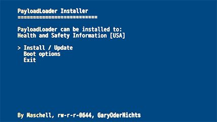 - Presiona el botón A para instalar PayloadLoader.
- El instalador te pregunta si estas REALMENTE seguro de querer instalar PayloadLoader.
- Usa las flechas del D-Pad del GamePad para seleccionar Install y presiona el botón A para iniciar la instalación.
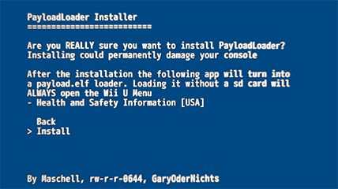 - Después de que la instalación termine, presiona el botón A para apagar la consola.
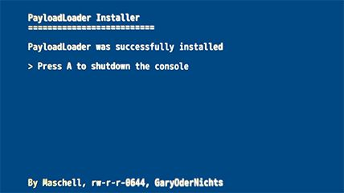
payload.elf dentro de la carpeta sd:/wiiu. Mantén presionado el botón POWER de la consola hasta que se apague, revisa los archivos de la tarjeta SD y vuelve a intentar instalar PayloadLoader.Autobooting PayloadLoader (PayloadLoader de arranque automático)
Actualmente tu consola tiene PayloadLoader de arranque manual, es decir, cada vez que quieres iniciar Tiramisu debes abrir la aplicación Información sobre salud y seguridad. Si deseas iniciar automáticamente Tiramisu cada que la consola enciende debes activar el arranque automático del PayloadLoader.
Instrucciones
- En este punto debes tener la Wii U apagada con la tarjeta SD introducida.
- Enciende la consola y accede al menú de Wii U.
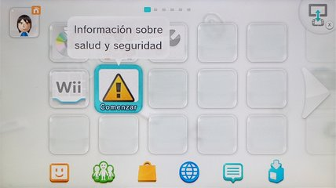 - Abre Información sobre salud y seguridad y mantén presionado el botón X hasta que salga el menú EnvironmentLoader.
- Navega por el menú usando las flechas del D-Pad del GamePad, selecciona installer y presiona el botón A para iniciarlo.
- Ahora debes estar en el PayloadLoader Installer, con la opción Check seleccionada.
- Presiona el botón A para verificar.
- El instalador debe indicar que PayloadLoader está instalado en la aplicación Health and Safety Information (Información sobre salud y seguridad).
- Usa las flechas del D-Pad del GamePad para seleccionar Boot options y presiona el botón A.
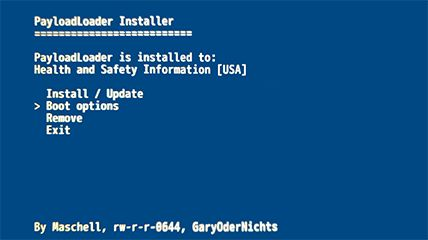 - El instalador debe indicar que el sistema de la Wii U actualmente inicia con la aplicación Wii U Menu.
- La opción Switch to PayloadLoader debe estar seleccionada.
- Presiona el botón A. Esto hará que PayloadLoader sea la aplicación con la que inicia la Wii U.
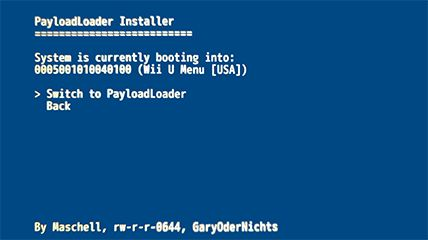 - Después de que la instalación termine, presiona botón A para apagar la consola.

Ahora el PayloadLoader arrancará automáticamente cada que enciendas la Wii U.
Configurar el arranque del EnvironmentLoader y de Tiramisu
Con la configuración actual cada que arranca PayloadLoader debes seleccionar y abrir manualmente Tiramisu en el EnvironmentLoader, y luego, seleccionar y abrir manualmente el menú de Wii U en Tiramisu. Vamos a hacer que el EnvironmentLoader cargue automáticamente Tiramisu y que Tiramisu cargue automáticamente el menú de Wii U.
- Si activaste el arranque automático del PayloadLoader: Enciende la consola y mantén presionado el botón X hasta que salga el EnvironmentLoader.
- Si tu consola tiene PayloadLoader de arranque manual: Enciende la consola, accede al menú de Wii U, abre Información sobre salud y seguridad y mantén presionado el botón X del GamePad para abrir el EnvironmentLoader.
- Navega por el menú usando las flechas del D-Pad del GamePad, selecciona tiramisu, presiona el botón Y para configurarlo como el entorno predeterminado y luego presiona el botón A para abrir Tiramisu.
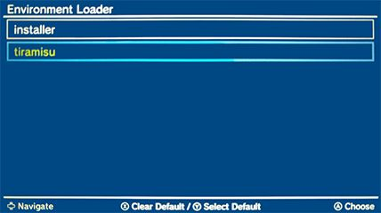 - Si te aparece un mensaje de alerta acerca del update folder (carpeta update) quiere decir que tu consola no está bloqueando las actualizaciones del sistema apropiadamente.
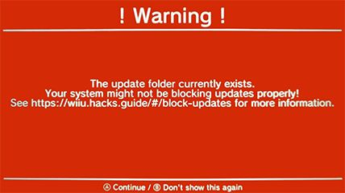 - Presiona el botón B para no volver a ver el mensaje de alerta.
- Consulta la información de aquí si quieres bloquear completamente las actualizaciones del sistema de la consola.
- Ahora debes estar en el menú de Tiramisu Boot Selector, con la opción Wii U Menu seleccionada, presiona el botón Y para configurar dicha opción como predeterminada y luego presiona el botón A para abrir el menú de Wii U.

- En este punto ya finalizaste la instalación de EnvironmentLoader, PayloadLoader y Tiramisu, pero aún falta añadir aplicaciones y módulos que agregan funcionalidad al "hack" de la consola. Toma nota de los siguientes cuadros de información para usar correctamente Tiramisu.
Añadir aplicaciones y módulos
Ya tienes la consola con un hack, pero para aprovecharlo hay que agregar aplicaciones. En caso de que quieras añadir alguna aplicación que no está aquí o que quieras actualizar alguna aplicación es impórtate que aprendas a colocarlas por tu cuenta.
En general las aplicaciones para Wii U se colocan en la carpeta sd:/wiiu/apps, observa la ruta de carpetas en las imágenes de referencia. Si tienes dudas usa las imágenes para comprobar que ubicaste cada aplicación correctamente.
Las aplicaciones se abren usando el menú del Homebrew Launcher ("lanzador de aplicaciones hechas en casa"). En la imagen de abajo el Homebrew Launcher tiene tres aplicaciones: Homebrew App Store, SaveMii Mod y WUP Installer GX2.
Añadir aplicaciones al Homebrew Launcher
- Si tienes encendida la consola apágala.
- Saca la tarjeta SD de la Wii U y ponla en tu PC (o teléfono inteligente) para poner archivos.
Vamos a descargar los archivos de las siguientes aplicaciones:
- WUP Installer GX2.
- SaveMii mod WUT Port.
- Homebrew Appstore (descarga el archivo
wiiu-extracttosd.zip). - Bloopair (descarga el archivo
Bloopair_v#.#.#.zip). - NUSspli (descarga el archivo
NUSspli-#.###-HBL.zip).
Ahora vamos a instalar las aplicaciones:
- Descomprime el archivo
wup_installer_gx2.zip - Entra en la carpeta
wiiuy luego entra en la carpetaapps. - Copia la carpeta
wup_installer_gx2y pégala en la carpetasd:/wiiu/apps.
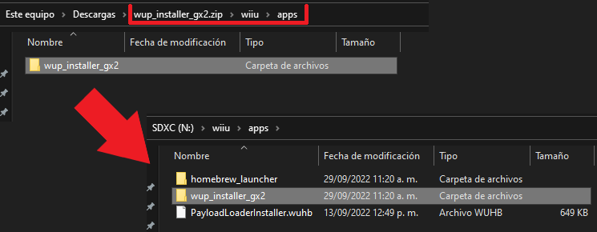 - Descomprime el archivo
SaveMiiModWUTPort.zip - Entra en la carpeta
wiiuy luego entra en la carpetaapps. - Copia la carpeta
SaveMiiModWUTPorty pégala en la carpetasd:/wiiu/apps.
- Descomprime el archivo
wiiu-extracttosd.zip - Entra en la carpeta
wiiuy luego entra en la carpetaapps. - Copia la carpeta
appstorey pégala en la carpetasd:/wiiu/apps.
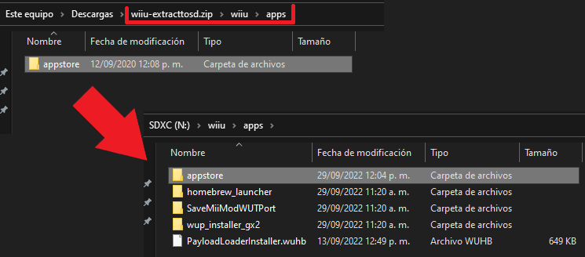 - Descomprime el archivo
Bloopair_v#.#.#.zip - Entra en la carpeta
wiiuy luego entra en la carpetaapps. - Copia la carpeta
Bloopair_pair_menuy pégala en la carpetasd:/wiiu/apps.
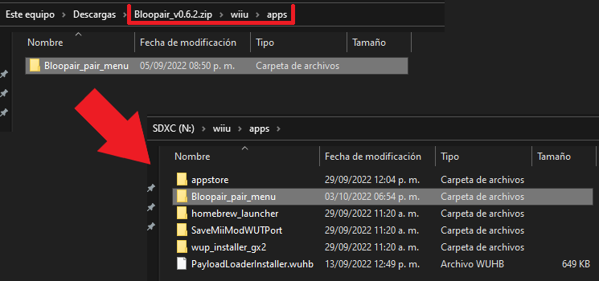 - Descomprime el archivo
NUSspli-#.###-HBL.zip - Copia la carpeta
NUSspliy pégala en la carpetasd:/wiiu/apps.
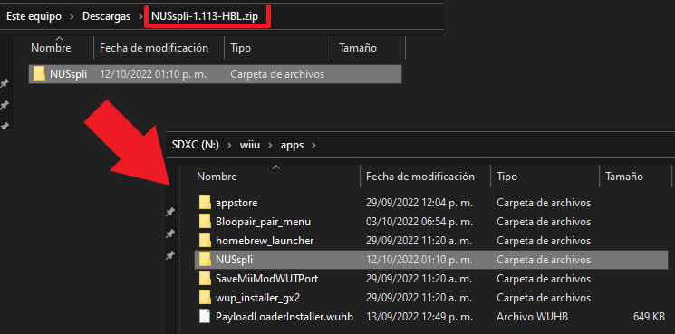
Las aplicaciones que acabas de instalar sirven para:
- WUP Installer GX2 (Wii U Public title Installer) es un instalador de juegos y aplicaciones en formato NUS Content cifrado (archivos
.app,.h3,title.tmd,title.certytitle.tik). - SaveMii mod WUT Port permite administrar los archivos de datos guardado de juegos de Wii U y Wii.
- La Homebrew Appstore permite buscar y descargar aplicaciones homebrew directamente desde tu Wii U.
- Bloopair permite conectar de forma inalámbrica los controles Bluetooth más populares. Consulta el hilo oficial de la aplicación para más detalles.
- NUSspli permite descargar e instalar juegos de forma rápida y simple directamente desde la Wii U.
- La aplicación WUP Installer GX2 se encuentra en
sd:/wiiu/apps/wup_installer_gx2/wup_installer_gx2.elf.
- La aplicación HB App Store se encuentra en
sd:/wiiu/apps/appstore/appstore.rpx.
- La aplicación SaveMii mod WUT Port se encuentra en
sd:/wiiu/apps/SaveMiiModWUTPort/savemii.rpx.
- La aplicación Bloopair pair menu se encuentra en
sd:/wiiu/apps/Bloopair_pair_menu/Bloopair_pair_menu.rpx.
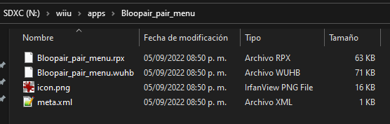 - La aplicación NUSspli se encuentra en
sd:/wiiu/apps/NUSspli/NUSspli.rpx.
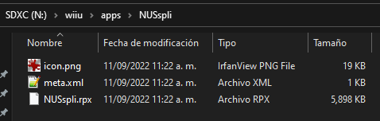
Añadir módulos a Tiramisu
Los módulos deben estar hechos explícitamente para ser usados en el entorno de Tiramisu, tienen formato .rpx.
- Si seguiste las instrucciones para añadir aplicaciones al Homebrew Launcher debes tener el archivo
Bloopair_v#.#.#.zip - Descomprime el archivo
Bloopair_v#.#.#.zipy copia el archivo30_bloopair.rpxa la carpetasd:/wiiu/environments/tiramisu/modules/setup.
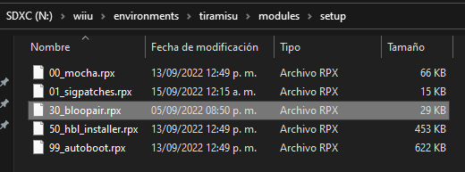
30_bloopair.rpx es Bloopair en sí mismo. Cargará junto con el resto de módulos cuando inicie el entorno de Tiramisu.Importante recuerda que:
- A partir de ahora accedes al Homebrew Launcher desde el Editor de Mii.
- Desde el menú del Homebrew Launcher abres las aplicaciones homebrew de Wii U como WUP Instaler GX2, NUSspli, SaveMii, etc.
Aquí termina la guía de Tiramisu. Puedes continuar con la siguiente guía o volver al inicio.
Resumen de la instalación de Tiramisu
Los siguientes pasos son los esenciales para instalar Tiramisu de forma correcta. Si tienes dudas consulta la guía detallada de instalación de Tiramisu.
- Formatea la tarjeta SD en FAT32 con unidad de asignación de 32 kilobytes (32768).
- Descarga los archivos de Tiramisu para tu café.
- Descarga el módulo Sigpatches.
- Copia el contenido del archivo
.zipde Tiramisu a la raíz de la tarjeta SD. - Copia el archivo
01_sigpatches.rpxa la carpetasd:/wiiu/environments/tiramisu/modules/setup. - Enciende la consola con la tarjeta SD puesta.
- Abre el navegador de internet de la consola.
- Introduce la URL: u.wiidb.de.
- Toca el enlace HAXX y mantén presionado el botón X.
- Con la opción installer seleccionada presiona el botón A.
- Con la opción Check seleccionada presiona el botón A.
- Con la opción Install / Update seleccionada presiona el botón A.
- Selecciona Install y presiona el botón A.
- Presiona el botón A para apagar la consola.
- Enciende la consola.
- Abre Información sobre salud y seguridad y mantén presionado el botón X.
- Con la opción installer seleccionada presiona el botón A.
- Con la opción Check seleccionada presiona el botón A.
- Selecciona Boot options y presiona el botón A.
- Con la opción Switch to PayloadLoader seleccionada presiona el botón A.
- Presiona el botón A para apagar la consola.
- Enciende la consola y mantén presionado el botón X.
- Selecciona tiramisu, presiona el botón Y y luego presiona el botón A.
- Presiona el botón B.
- Con la opción Wii U Menu seleccionada, presiona el botón Y y luego presiona el botón A.
- En este punto ya finalizaste la instalación de EnvironmentLoader, PayloadLoader y Tiramisu, pero aún falta añadir aplicaciones y módulos que agregan funcionalidad al "hack" de la consola. Toma nota de los siguientes cuadros de información para usar correctamente Tiramisu.
Elige un punto de entrada
Lo único que cambia entre un método y otro es la forma como lo ejecutas. Elije el punto de entrada que más te convenga según tus necesidades. Sin importar cual elijas, una vez dentro podrás hacer lo mismo y usar las mismas aplicaciones.
PayloadLoader: Requiere parchar una aplicación legitima de la consola (por ejemplo, Información sobre salud y seguridad), una vez instalado bastará con abrir el icono de la aplicación modificada en el menú de la Wii U (similar a Haxchi).
Webhack: Deberás entrar a una página web en internet para ejecutarlo cada vez que se inicia la Wii U. No necesita de la compra de un juego, es el más simple de instalar y no modifica archivos de la consola. Recomendado para familiarizarse con el proceso de hackeo e instalación de juegos, es fácil pasar de Webhack a Indexiine o de Webhack a Haxchi posteriormente.
Indexiine: Sólo deberás abrir el navegador de internet para ejecutarlo cada vez que se inicia la Wii U. No necesita de internet o de la compra de un juego. Modifica un archivo del navegador, formatear la Wii U no restaurará ese archivo, debe ser restaurado manualmente. Tiene riesgo de bloquear el navegador de internet si no se desinstala correctamente, el bloqueo siempre se puede reparar.
Haxchi: Una vez instalado bastará con abrir su icono en el menú de la Wii U para ejecutarlo cada vez que se inicia la Wii U. Requiere de comprar un juego de Nintendo DS en la eShop de la Wii U. No necesita de internet, es el más práctico para el uso del día a día.
Coldboot Haxchi (CBHC): Una vez instalado cargará Haxchi automáticamente al iniciar la Wii U. Es un derivado de Haxchi, por lo que requiere comprar un juego de Nintendo DS en la eShop de la Wii U. No necesita de internet. Es el único método que tiene riesgo de dañar la consola ya que modifica archivos importantes del sistema, si no eres cuidadoso y lo desinstalas incorrectamente brickearas la consola.
Prepara la tarjeta SD para Webhack
La tarjeta SD debe ser formateada en FAT32 con tamaño de unidad de asignación (allocation unit size) de 32 kilobytes (32768). Se recomienda dejar la etiqueta del volumen (volume label) en blanco ya que poner una puede causar problemas con algunas aplicaciones. Para tarjetas SD mayores a 32 GB debes formatear usando GUIFormat.
- Descomprime el archivo Webhack.zip y copia las carpetas
installywiiuen la raíz de la tarjeta SD. Una alternativa para usuarios avanzados es preparar los archivos por cuenta propia. - Extrae la tarjeta SD de forma segura del dispositivo que usaste para hacer la copia de archivos e introdúcela en la ranura de la Wii U con la consola apagada.
- Cerciórate de no tener ningún dispositivo USB conectado en la Wii U antes de continuar.
Prepara los archivos para la tarjeta SD para Webhack
Los siguientes enlaces dirigen a los lanzamientos oficiales de los desarrolladores de cada aplicación, son las versiones estables más recientes.
Descarga
- Configurable Payload (descarga el archivo
payload.elf). - Homebrew Launcher (descarga el archivo
homebrew_launcher.elf). - Homebrew App Store (descarga el archivo
wiiu-extracttosd.zip). - WUP Installer GX2 (descarga el archivo
wup_installer_gx2.elf). - Wii U NAND Dumper (clic en el botón Download).
- SaveMii (descarga el archivo
savemii.elf). - Mocha CFW (clic en el botón Download).
- Archivo config.ini (para la configuración de Mocha CFW).
- Archivo payload.cfg (para la configuración del payload).
- Archivo wiiu.zip (como base para la estructura de archivos).
Colocación
Nota: Los archivos info.json y manifest.install no son necesarios, los puedes omitir o eliminar sin ningún problema.
- Crea una carpeta llamada
installen la raíz de la tarjeta SD. - Copia el contenido del archivo
wiiu.zipa la raíz de la tarjeta SD. - Copia el contenido del archivo
mocha.zipa la raíz de la tarjeta SD. - Copia el contenido del archivo
nanddumper.zipa la raíz de la tarjeta SD. - Copia el contenido del archivo
wiiu-extracttosd.zipa la raíz de la tarjeta SD. - Copia el archivo
savemii.elfen la carpetasd:/wiiu/apps/savemii. - Copia el archivo
wup_installer_gx2.elfen la carpetasd:/wiiu/apps/wup_installer_gx2. - Copia el archivo
homebrew_launcher.elfen la carpetasd:/wiiu/apps/homebrew_launcher. - Copia el archivo
payload.elfen la carpetasd:/wiiu. - Copia el archivo
payload.cfgen la carpetasd:/wiiu. - Copia el archivo
config.inien la carpetasd:/wiiu/apps/mocha.
Webhack
Con la tarjeta SD preparada ya tienes instalado Webhack sólo falta ejecutar el exploit. Ahora puedes encender la Wii U. Asegúrate de que la consola tenga acceso a internet para este paso.
- Abre el navegador de internet de la consola.
- Introduce la URL: u.wiidb.de (puedes consultar paginas alternativas aquí).
- Para que no tengas que escribir la URL en cada ocasión añádela a favoritos. Al cargar la página toca en el Mii de la esquina inferior izquierda, después toca el botón para añadir la página a favoritos y luego toca el botón Atrás.
- Ahora toca en HAXX.
- Espera unos segundos, deberá cargar el Homebrew Launcher.
Si la Wii U se congela de alguna forma, espera unos 20 segundos. Si no sucede nada, mantén presionado el botón Power de la consola hasta que se apague, vuelve prender la consola, abre el navegador, entra en Ajustes, selecciona un motor de búsqueda, borra las cookies del navegador y vuelve a intentarlo.
Una vez dentro del Homebrew Launcher y antes de hacer cualquier modificación en la consola es recomendable hacer un respaldo de la memoria interna.
Páginas con el exploit para el navegador
- http://u.wiidb.de/ Toca en HAXX.
- http://wiiuexploit.xyz/ Toca en el botón
Run Exploit!
. - http://loadiine.ovh/ Toca en el botón
Submit
.
Haz un respaldo de la memoria interna de la Wii U
Este paso es opcional si usas Webhack.
En el caso de que algo salga muy mal y la Wii U termine brickeada, restaurar la copia de la memoria interna puede solucionarlo.
Restaurar la copia de respaldo de la Wii U requiere hardware especial y habilidades de micro soldadura. El respaldo de la memoria interna es único para cada consola, las copias de respaldo de otras consolas no funcionarán.
- Navega a través del Homebrew Launcher y abre Wii U NAND Dumper.
- Usa el D-Pad del Wii U GamePad para ingresar la siguiente configuración:
- Dump SLC (528MB) : yes
- Dump SLCCMPT (528MB) : yes
- Dump MLC (8GB/32GB) : Opcional
- Dump OTP (1KB) : yes
- Dump SEEPROM (1KB) : yes
- Presiona el botón A para iniciar el proceso de copia.
- Cuando se complete el proceso la consola cargará el menú de la Wii U.
- Apaga la consola, saca la tarjeta SD de la Wii U y conéctala a tu dispositivo para copiar los archivos.
- Copia los archivos
slc.bin,slccmpt.bin,seeprom.bin,otp.biny, si elegiste realizar una copia de seguridad completa, todos los archivosmlc.bin.parten tu dispositivo. - Elimina los archivos de respaldo en la tarjeta SD para liberar espacio.
- Extrae la tarjeta SD de forma segura del dispositivo que usaste para hacer la copia de archivos e introdúcela en la ranura de la Wii U con la consola apagada.
Puedes hacer varias copias de seguridad en servicios de la nube de internet para evitar perder el valioso respaldo de la Wii U.
Cargar Mocha CFW
A diferencia de sistemas como DSi, 3DS o Wii, el CFW de la Wii U es temporal. Esto significa que cuando la consola se reinicia, pierde el CFW y tendrás que usar un punto de entrada para cargar un CFW nuevamente. Esto se puede automatizar instalando Coldboot Haxchi (CBHC).
Desde este momento para cargar Mocha CFW:
- Abre el navegador de internet.
- Abre el Homebrew Launcher entrado en una página de internet con el exploit de Webhack.
- Navega a través del Homebrew Launcher y abre Mocha CFW.
- Inmediatamente cargará Mocha CFW en la consola y regresará al Homebrew Launcher.
Con un CFW cargado puedes instalar y correr juegos con tickets falsos (todo el contenido exclusivo de la eShop como DLCs y juegos de la Consola Virtual) así como juegos de otra región y aplicaciones como emuladores.
Aquí termina la guía de Webhack. Puedes continuar con la siguiente guía o volver al inicio.
Prepara la tarjeta SD para Indexiine
La tarjeta SD debe ser formateada en FAT32 con tamaño de unidad de asignación (allocation unit size) de 32 kilobytes (32768). Se recomienda dejar la etiqueta del volumen (volume label) en blanco ya que poner una puede causar problemas con algunas aplicaciones. Para tarjetas SD mayores a 32 GB debes formatear usando GUIFormat.
- Descomprime el archivo Indexiine.zip y copia las carpetas
installywiiuen la raíz de la tarjeta SD. Una alternativa para usuarios avanzados es preparar los archivos por cuenta propia. - Extrae la tarjeta SD de forma segura del dispositivo que usaste para hacer la copia de archivos e introdúcela en la ranura de la Wii U con la consola apagada.
- Cerciórate de no tener ningún dispositivo USB conectado en la Wii U antes de continuar.
Prepara los archivos para la tarjeta SD para Indexiine
Los siguientes enlaces dirigen a los lanzamientos oficiales de los desarrolladores de cada aplicación, son las versiones estables más recientes.
Descarga
- Configurable Payload (descarga el archivo
payload.elf). - Homebrew Launcher (descarga el archivo
homebrew_launcher.elf). - Homebrew App Store (descarga el archivo
wiiu-extracttosd.zip). - WUP Installer GX2 (descarga el archivo
wup_installer_gx2.elf). - Wii U NAND Dumper (clic en el botón Download).
- SaveMii (descarga el archivo
savemii.elf). - Mocha CFW (clic en el botón Download).
- Archivo config.ini (para la configuración de Mocha CFW).
- Indexiine-Installer (descarga el archivo
indexiine-installer.zip). - Homebrew Launcher Channel (descarga el archivo
install_channel.zip). - Archivo payload.cfg (para la configuración del payload).
- Archivo wiiu.zip (como base para la estructura de archivos).
Colocación
Nota: Los archivos info.json y manifest.install no son necesarios, los puedes omitir o eliminar sin ningún problema.
- Crea una carpeta llamada
installen la raíz de la tarjeta SD. - Copia el contenido del archivo
wiiu.zipa la raíz de la tarjeta SD. - Descomprime el archivo
install_channel.zipy copia la carpetainstall_channelen la carpetasd:/installque creaste. - Copia el contenido del archivo
indexiine-installer.zipa la raíz de la tarjeta SD. - Copia el contenido del archivo
mocha.zipa la raíz de la tarjeta SD. - Copia el contenido del archivo
nanddumper.zipa la raíz de la tarjeta SD. - Copia el contenido del archivo
wiiu-extracttosd.zipa la raíz de la tarjeta SD. - Copia el archivo
savemii.elfen la carpetasd:/wiiu/apps/savemii. - Copia el archivo
wup_installer_gx2.elfen la carpetasd:/wiiu/apps/wup_installer_gx2. - Copia el archivo
homebrew_launcher.elfen la carpetasd:/wiiu/apps/homebrew_launcher. - Copia el archivo
payload.elfen la carpetasd:/wiiu. - Copia el archivo
payload.cfgen la carpetasd:/wiiu. - Copia el archivo
config.inien la carpetasd:/wiiu/apps/mocha.
Webhack
- Abre el navegador de internet de la consola.
- Toca el botón de pestañas y cierra todas las pestañas hasta quedarte sólo con la Página de inicio.
- Entra en Ajustes, asegúrate de tener seleccionado un motor de búsqueda y después toca el botón Borrar cookies, toca en Sí y Aceptar. Toca el botón Atrás.
- En este punto mantén presionado el botón Power del GamePad para apagar la consola por completo, esto es para evitar que la consola cree un cache de archivos.
- Vuelve a prender la consola y vuelve a abrir el navegador de internet de la consola.
- Introduce la URL: u.wiidb.de (puedes consultar paginas alternativas aquí).
- Al cargar la página toca en HAXX.
- Espera unos segundos, cuando la pantalla se ponga en blanco mantén presionado el botón A, esto cargará el Homebrew Launcher (después de cargado suelta el botón A).
Si la Wii U se congela de alguna forma, espera unos 20 segundos. Si no sucede nada, mantén presionado el botón Power de la consola hasta que se apague, vuelve prender la consola, abre el navegador, entra en Ajustes, selecciona un motor de búsqueda, borra las cookies del navegador y vuelve a intentarlo.
Una vez dentro del Homebrew Launcher y antes de hacer cualquier modificación en la consola es recomendable hacer un respaldo de la memoria interna.
Haz un respaldo de la memoria interna de la Wii U
Este paso es opcional si usas Indexiine.
En el caso de que algo salga muy mal y la Wii U termine brickeada, restaurar la copia de la memoria interna puede solucionarlo.
Restaurar la copia de respaldo de la Wii U requiere hardware especial y habilidades de micro soldadura. El respaldo de la memoria interna es único para cada consola, las copias de respaldo de otras consolas no funcionarán.
- Navega a través del Homebrew Launcher y abre Wii U NAND Dumper.
- Usa el D-Pad del Wii U GamePad para ingresar la siguiente configuración:
- Dump SLC (528MB) : yes
- Dump SLCCMPT (528MB) : yes
- Dump MLC (8GB/32GB) : Opcional
- Dump OTP (1KB) : yes
- Dump SEEPROM (1KB) : yes
- Presiona el botón A para iniciar el proceso de copia.
- Cuando se complete el proceso la consola cargará el menú de la Wii U.
- Apaga la consola, saca la tarjeta SD de la Wii U y conéctala a tu dispositivo para copiar los archivos.
- Copia los archivos
slc.bin,slccmpt.bin,seeprom.bin,otp.biny, si elegiste realizar una copia de seguridad completa, todos los archivosmlc.bin.parten tu dispositivo. - Elimina los archivos de respaldo en la tarjeta SD para liberar espacio.
- Extrae la tarjeta SD de forma segura del dispositivo que usaste para hacer la copia de archivos e introdúcela en la ranura de la Wii U con la consola apagada.
Puedes hacer varias copias de seguridad en servicios de la nube de internet para evitar perder el valioso respaldo de la Wii U.
Instalación de Indexiine
Ya cargado el Homebrew Launcher como se explicó anteriormente.
- Navega a través del Homebrew Launcher y abre Indexiine Installer.
- Presiona el botón A para instalar Indexiine.
- Cuando se complete el proceso, regresará automáticamente al Homebrew Launcher.
Ahora Mocha CFW se iniciará cada vez que cargue la página de inicio del navegador de internet de la Wii U, incluso sin una conexión a internet activa.
El Homebrew Launcher se iniciará cada vez que cargue la Página de inicio del navegador de internet de la Wii U y mantengas presionado el botón A cuando la pantalla se ponga en blanco, incluso sin una conexión a internet activa.
En caso de que desees desinstalar Indexiine consulta como desinstalar Indexiine correctamente.
Instalación de Homebrew Launcher Channel
Instalar Homebrew Launcher Channel (icono en el menú de la Wii U) facilita el acceso para usuarios de Indexiine.
- Navega a través del Homebrew Launcher y abre Mocha CFW.
- Inmediatamente cargará Mocha CFW en la consola y regresará al menú de la Wii U.
- Vuelve a abrir el navegador de internet.
- Espera unos segundos, cuando la pantalla se ponga en blanco mantén presionado el botón A, esto cargará el Homebrew Launcher.
- Navega a través del Homebrew Launcher y abre WUP Installer GX2.
- Presiona Install y confirma con Yes.
- Selecciona NAND como destino de la instalación.
- Finalizado el proceso de instalación presiona Ok y después el botón Home para regresar al Homebrew Launcher.
- Presiona el botón Home y luego toca el botón Salir para regresar al menú de la Wii U.
Ahora tienes el Homebrew Launcher Channel instalado en el menú de la Wii U.
Cargar Mocha CFW
A diferencia de sistemas como DSi, 3DS o Wii, el CFW de la Wii U es temporal. Esto significa que cuando la consola se reinicia, pierde el CFW y tendrás que usar un punto de entrada para cargar un CFW nuevamente. Esto se puede automatizar instalando Coldboot Haxchi (CBHC).
Desde este momento para cargar Mocha CFW:
- Abre el icono del navegador de internet en la parte inferior del menú de la Wii U.
- Después de unos segundos cargará Mocha CFW en la consola y posteriormente regresará al menú de la Wii U.
¡Advertencia! No uses el navegador de internet para otra cosa que no sea cargar Mocha CFW.
Con un CFW cargado puedes instalar y correr juegos con tickets falsos (todo el contenido exclusivo de la eShop como DLCs y juegos de la Consola Virtual) así como juegos de otra región y aplicaciones como emuladores.
Aquí termina la guía de Indexiine. Puedes continuar con la siguiente guía o volver al inicio.
Elige un juego de la Consola Virtual de Nintendo DS
Ten en cuenta que no podrás jugar el juego en el que instales Haxchi (a menos que desinstales Haxchi y vuelvas a instalar el juego desde la eShop).
Los residentes de países donde la versión limitada de la eShop cerró deberán cambiar el país de residencia desde configuración de la consola. Si la consola es región USA puedes cambar el país de residencia a Estados Unidos de América, Canadá o México. Deberán hacer una cuenta de usuario con el nuevo país de residencia para tener acceso a la eShop.
Estos son los juegos compatibles:
- Animal Crossing: Wild World
- Big Brain Academy
- Brain Age: Train Your Brain in Minutes a Day! / Dr. Kawashima’s Brain Training: How Old is Your Brain?
- Donkey Kong: Jungle Climber
- Kirby: Canvas Curse / Kirby: Power Paintbrush
- Kirby: Mass Attack
- Kirby: Squeak Squad / Kirby: Mouse Attack
- The Legend of Zelda: Phantom Hourglass
- The Legend of Zelda: Spirit Tracks
- Mario & Luigi: Partners in Time
- Mario Kart DS
- New Super Mario Bros.
- Pokemon Mystery Dungeon: Explorers of the Sky
- Star Fox Command
- Super Mario 64 DS
- Wario: Master of Disguise
- WarioWare: Touched!
- Yoshi’s Island DS
- Yoshi Touch & Go
Big Brain Academy y Brain Age / Brain Training tienen un costo de 7 dólares estadounidenses, el resto de juegos tienen un consto de 10 dólares estadounidenses.
Una vez comprado el juego asegúrate de descárgalo en la memoria interna de la Wii U.
Prepara la tarjeta SD para Haxchi
La tarjeta SD debe ser formateada en FAT32 con tamaño de unidad de asignación (allocation unit size) de 32 kilobytes (32768). Se recomienda dejar la etiqueta del volumen (volume label) en blanco ya que poner una puede causar problemas con algunas aplicaciones. Para tarjetas SD mayores a 32 GB debes formatear usando GUIFormat.
- Descomprime el archivo Haxchi.zip y copia las carpetas
haxchi,installywiiuen la raíz de la tarjeta SD. Una alternativa para usuarios avanzados es preparar los archivos por cuenta propia. - Extrae la tarjeta SD de forma segura del dispositivo que usaste para hacer la copia de archivos e introdúcela en la ranura de la Wii U con la consola apagada.
- Cerciórate de no tener ningún dispositivo USB conectado en la Wii U antes de continuar.
Prepara los archivos para la tarjeta SD para Haxchi
Los siguientes enlaces dirigen a los lanzamientos oficiales de los desarrolladores de cada aplicación, son las versiones estables más recientes.
Descarga
- Configurable Payload (descarga el archivo
payload.elf). - Homebrew Launcher (descarga el archivo
homebrew_launcher.elf). - Homebrew App Store (descarga el archivo
wiiu-extracttosd.zip). - WUP Installer GX2 (descarga el archivo
wup_installer_gx2.elf). - Wii U NAND Dumper (clic en el botón Download).
- SaveMii (descarga el archivo
savemii.elf). - Haxchi (instalador de Haxchi, clic en el botón Download).
- Homebrew Launcher Channel (descarga el archivo
install_channel.zip). - Archivo payload.cfg (para la configuración del payload).
- Archivo wiiu.zip (como base para la estructura de archivos).
Colocación
Nota: Los archivos info.json y manifest.install no son necesarios, los puedes omitir o eliminar sin ningún problema.
- Crea una carpeta llamada
installen la raíz de la tarjeta SD. - Copia el contenido del archivo
wiiu.zipa la raíz de la tarjeta SD. - Descomprime el archivo
install_channel.zipy copia la carpetainstall_channelen la carpetasd:/installque creaste. - Copia el contenido del archivo
haxchi.zipa la raíz de la tarjeta SD. - Copia el contenido del archivo
nanddumper.zipa la raíz de la tarjeta SD. - Copia el contenido del archivo
wiiu-extracttosd.zipa la raíz de la tarjeta SD. - Copia el archivo
savemii.elfen la carpetasd:/wiiu/apps/savemii. - Copia el archivo
wup_installer_gx2.elfen la carpetasd:/wiiu/apps/wup_installer_gx2. - Copia el archivo
homebrew_launcher.elfen la carpetasd:/wiiu/apps/homebrew_launcher. - Copia el archivo
payload.elfen la carpetasd:/wiiu. - Copia el archivo
payload.cfgen la carpetasd:/wiiu.
Webhack
Webhack es el punto de entrada para instalar Haxchi desde cero.
Con la tarjeta SD preparada ya tienes instalado Webhack, sólo falta ejecutar el exploit. Ahora puedes encender la Wii U. Asegúrate de que la consola tenga acceso a internet para este paso.
- Abre el navegador de internet de la consola.
- Introduce la URL: u.wiidb.de (puedes consultar paginas alternativas aquí).
- Al cargar la página toca en HAXX.
- Espera unos segundos, deberá cargar el Homebrew Launcher.
Si la Wii U se congela de alguna forma, espera unos 20 segundos. Si no sucede nada, mantén presionado el botón Power de la consola hasta que se apague, vuelve prender la consola, abre el navegador, entra en Ajustes, selecciona un motor de búsqueda, borra las cookies del navegador y vuelve a intentarlo.
Una vez dentro del Homebrew Launcher y antes de hacer cualquier modificación en la consola es recomendable hacer un respaldo de la memoria interna.
Haz un respaldo de la memoria interna de la Wii U
Este paso es opcional si usas Haxchi.
En el caso de que algo salga muy mal y la Wii U termine brickeada, restaurar la copia de la memoria interna puede solucionarlo.
Restaurar la copia de respaldo de la Wii U requiere hardware especial y habilidades de micro soldadura. El respaldo de la memoria interna es único para cada consola, las copias de respaldo de otras consolas no funcionarán.
- Navega a través del Homebrew Launcher y abre Wii U NAND Dumper.
- Usa el D-Pad del Wii U GamePad para ingresar la siguiente configuración:
- Dump SLC (528MB) : yes
- Dump SLCCMPT (528MB) : yes
- Dump MLC (8GB/32GB) : Opcional
- Dump OTP (1KB) : yes
- Dump SEEPROM (1KB) : yes
- Presiona el botón A para iniciar el proceso de copia.
- Cuando se complete el proceso la consola cargará el menú de la Wii U.
- Apaga la consola, saca la tarjeta SD de la Wii U y conéctala a tu dispositivo para copiar los archivos.
- Copia los archivos
slc.bin,slccmpt.bin,seeprom.bin,otp.biny, si elegiste realizar una copia de seguridad completa, todos los archivosmlc.bin.parten tu dispositivo. - Elimina los archivos de respaldo en la tarjeta SD para liberar espacio.
- Extrae la tarjeta SD de forma segura del dispositivo que usaste para hacer la copia de archivos e introdúcela en la ranura de la Wii U con la consola apagada.
Puedes hacer varias copias de seguridad en servicios de la nube de internet para evitar perder el valioso respaldo de la Wii U.
Instalación de Haxchi
Ya cargado el Homebrew Launcher como se explicó anteriormente.
- Navega a través del Homebrew Launcher y abre Haxchi.
- Usa el D-Pad del Wii U GamePad para navegar con el cursor hasta el juego en el que deseas inyectar Haxchi.
- Presiona el botón A para instalar Haxchi.
- Completada la instalación, la consola cargará el menú de la Wii U.
Veras que el juego fue reemplazado por el ícono de Haxchi.
En caso de que desees desinstalar Haxchi consulta como desinstalar Haxchi correctamente.
Instalación de Homebrew Launcher Channel
Instalar Homebrew Launcher Channel (icono en el menú de la Wii U) facilita el acceso para usuarios de Haxchi.
- Abre el icono de Haxchi en el menú de la Wii U.
- Inmediatamente cargará Haxchi CFW en la consola y regresará al menú de la Wii U.
- Vuelve a abrir el icono de Haxchi y mantén presionado el botón A después de iniciarlo, esto cargará el Homebrew Launcher.
- Navega a través del Homebrew Launcher y abre WUP Installer GX2.
- Utiliza la pantalla táctil para seleccionar install_channel.
- Presiona Install y confirma con Yes.
- Selecciona NAND como destino de la instalación.
- Finalizado el proceso de instalación presiona Ok y después el botón Home para regresar al Homebrew Launcher.
- Presiona el botón Home y luego toca el botón Salir para regresar al menú de la Wii U.
Ahora tienes el Homebrew Launcher Channel instalado en el menú de la Wii U.
Cargar Haxchi CFW
A diferencia de sistemas como DSi, 3DS o Wii, el CFW de la Wii U es temporal. Esto significa que cuando la consola se reinicia, pierde el CFW y tendrás que usar un punto de entrada para cargar un CFW nuevamente. Esto se puede automatizar instalando Coldboot Haxchi (CBHC).
Desde este momento para cargar Haxchi CFW:
- Abre el icono de Haxchi en el menú de la Wii U.
- Inmediatamente cargará Haxchi CFW en la consola y regresará al menú de la Wii U.
Con un CFW cargado puedes instalar y correr juegos con tickets falsos (todo el contenido exclusivo de la eShop como DLCs y juegos de la Consola Virtual) así como juegos de otra región y aplicaciones como emuladores.
Aquí termina la guía de Haxchi. Puedes continuar con la siguiente guía o volver al inicio.
Elige un juego de la Consola Virtual de Nintendo DS
Ten en cuenta que no podrás jugar el juego en el que instales Haxchi (a menos que desinstales Haxchi y vuelvas a instalar el juego desde la eShop).
Los residentes de países donde la versión limitada de la eShop cerró deberán cambiar el país de residencia desde configuración de la consola. Si la consola es región USA puedes cambar el país de residencia a Estados Unidos de América, Canadá o México. Deberán hacer una cuenta de usuario con el nuevo país de residencia para tener acceso a la eShop.
Estos son los juegos compatibles:
- Animal Crossing: Wild World
- Big Brain Academy
- Brain Age: Train Your Brain in Minutes a Day! / Dr. Kawashima’s Brain Training: How Old is Your Brain?
- Donkey Kong: Jungle Climber
- Kirby: Canvas Curse / Kirby: Power Paintbrush
- Kirby: Mass Attack
- Kirby: Squeak Squad / Kirby: Mouse Attack
- The Legend of Zelda: Phantom Hourglass
- The Legend of Zelda: Spirit Tracks
- Mario & Luigi: Partners in Time
- Mario Kart DS
- New Super Mario Bros.
- Pokemon Mystery Dungeon: Explorers of the Sky
- Star Fox Command
- Super Mario 64 DS
- Wario: Master of Disguise
- WarioWare: Touched!
- Yoshi’s Island DS
- Yoshi Touch & Go
Big Brain Academy y Brain Age / Brain Training tienen un costo de 7 dólares estadounidenses, el resto de juegos tienen un consto de 10 dólares estadounidenses.
Una vez comprado el juego asegúrate de descárgalo en la memoria interna de la Wii U.
Prepara la tarjeta SD para Coldboot Haxchi (CBHC)
La tarjeta SD debe ser formateada en FAT32 con tamaño de unidad de asignación (allocation unit size) de 32 kilobytes (32768). Se recomienda dejar la etiqueta del volumen (volume label) en blanco ya que poner una puede causar problemas con algunas aplicaciones. Para tarjetas SD mayores a 32 GB debes formatear usando GUIFormat.
- Descomprime el archivo CBHC.zip y copia las carpetas
cbhc,haxchi,installywiiuen la raíz de la tarjeta SD. Una alternativa para usuarios avanzados es preparar los archivos por cuenta propia. - Extrae la tarjeta SD de forma segura del dispositivo que usaste para hacer la copia de archivos e introdúcela en la ranura de la Wii U con la consola apagada.
- Cerciórate de no tener ningún dispositivo USB conectado en la Wii U antes de continuar.
Prepara los archivos para la tarjeta SD para Coldboot Haxchi
Los siguientes enlaces dirigen a los lanzamientos oficiales de los desarrolladores de cada aplicación, son las versiones estables más recientes.
Descarga
- Configurable Payload (descarga el archivo
payload.elf). - Homebrew Launcher (descarga el archivo
homebrew_launcher.elf). - Homebrew App Store (descarga el archivo
wiiu-extracttosd.zip). - WUP Installer GX2 (descarga el archivo
wup_installer_gx2.elf). - Wii U NAND Dumper (clic en el botón Download).
- SaveMii (descarga el archivo
savemii.elf). - Haxchi (instalador de Haxchi, clic en el botón Download).
- CBHC (instalador de Coldboot Haxchi, clic en el botón Download).
- Homebrew Launcher Channel (descarga el archivo
install_channel.zip). - Archivo payload.cfg (para la configuración del payload).
- Archivo wiiu.zip (como base para la estructura de archivos).
Colocación
Nota: Los archivos info.json y manifest.install no son necesarios, los puedes omitir o eliminar sin ningún problema.
- Crea una carpeta llamada
installen la raíz de la tarjeta SD. - Copia el contenido del archivo
wiiu.zipa la raíz de la tarjeta SD. - Descomprime el archivo
install_channel.zipy copia la carpetainstall_channelen la carpetasd:/installque creaste. - Copia el contenido del archivo
cbhc.zipa la raíz de la tarjeta SD. - Copia el contenido del archivo
haxchi.zipa la raíz de la tarjeta SD. - Copia el contenido del archivo
nanddumper.zipa la raíz de la tarjeta SD. - Copia el contenido del archivo
wiiu-extracttosd.zipa la raíz de la tarjeta SD. - Copia el archivo
savemii.elfen la carpetasd:/wiiu/apps/savemii. - Copia el archivo
wup_installer_gx2.elfen la carpetasd:/wiiu/apps/wup_installer_gx2. - Copia el archivo
homebrew_launcher.elfen la carpetasd:/wiiu/apps/homebrew_launcher. - Copia el archivo
payload.elfen la carpetasd:/wiiu. - Copia el archivo
payload.cfgen la carpetasd:/wiiu.
Webhack
Webhack es el punto de entrada para instalar Coldboot Haxchi (CBHC) desde cero.
Con la tarjeta SD preparada ya tienes instalado Webhack, sólo falta ejecutar el exploit. Ahora puedes encender la Wii U. Coldboot Haxchi no es compatible con el inicio rápido de la Wii U, si estás utilizando el menú inicio rápido, deshabilítalo. Asegúrate de que la consola tenga acceso a internet para este paso.
- Abre el navegador de internet de la consola.
- Introduce la URL: u.wiidb.de (puedes consultar paginas alternativas aquí).
- Al cargar la página toca en HAXX.
- Espera unos segundos, deberá cargar el Homebrew Launcher.
Si la Wii U se congela de alguna forma, espera unos 20 segundos. Si no sucede nada, mantén presionado el botón Power de la consola hasta que se apague, vuelve prender la consola, abre el navegador, entra en Ajustes, selecciona un motor de búsqueda, borra las cookies del navegador y vuelve a intentarlo.
Una vez dentro del Homebrew Launcher y antes de hacer cualquier modificación en la consola es obligatorio hacer un respaldo de la memoria interna.
Haz un respaldo de la memoria interna de la Wii U
¡Este paso es obligatorio si usas Coldboot Haxchi (CBHC)!
En el caso de que algo salga muy mal y la Wii U termine brickeada, restaurar la copia de la memoria interna puede solucionarlo.
Restaurar la copia de respaldo de la Wii U requiere hardware especial y habilidades de micro soldadura. El respaldo de la memoria interna es único para cada consola, las copias de respaldo de otras consolas no funcionarán.
- Navega a través del Homebrew Launcher y abre Wii U NAND Dumper.
- Usa el D-Pad del Wii U GamePad para ingresar la siguiente configuración:
- Dump SLC (528MB) : yes
- Dump SLCCMPT (528MB) : yes
- Dump MLC (8GB/32GB) : Opcional
- Dump OTP (1KB) : yes
- Dump SEEPROM (1KB) : yes
- Presiona el botón A para iniciar el proceso de copia.
- Cuando se complete el proceso la consola cargará el menú de la Wii U.
- Apaga la consola, saca la tarjeta SD de la Wii U y conéctala a tu dispositivo para copiar los archivos.
- Copia los archivos
slc.bin,slccmpt.bin,seeprom.bin,otp.biny, si elegiste realizar una copia de seguridad completa, todos los archivosmlc.bin.parten tu dispositivo. - Elimina los archivos de respaldo en la tarjeta SD para liberar espacio.
- Extrae la tarjeta SD de forma segura del dispositivo que usaste para hacer la copia de archivos e introdúcela en la ranura de la Wii U con la consola apagada.
Puedes hacer varias copias de seguridad en servicios de la nube de internet para evitar perder el valioso respaldo de la Wii U.
Advertencias para Coldboot Haxchi (CBHC)
Coldboot Haxchi puede dañar irreversiblemente la Wii U. Sigue al pie de la letra las siguientes reglas:
- ¡El juego de Nintendo DS debe instalarse de forma legítima desde la eShop!
- ¡No elimines la cuenta de usuario que compró el juego de Nintendo DS!
- ¡No desinstales el juego de Nintendo DS sin antes desinstalar correctamente Coldboot Haxchi!
- ¡No muevas el juego de Nintendo DS a un dispositivo USB!
- ¡No reinstales el mismo juego de Nintendo DS con WUP Installer o desde la eShop!
- ¡No reinstales Haxchi mientras tengas instalado Coldboot Haxchi!
- ¡No formatees la Wii U mientras tenga instalado Coldboot Haxchi!
¡Romper una de las reglas anteriores resultará en un brick!
Instalación de Coldboot Haxchi (CBHC)
Ya cargado el Homebrew Launcher como se explicó anteriormente.
- Navega a través del Homebrew Launcher y abre Haxchi.
- Usa el D-Pad del Wii U GamePad para navegar con el cursor hasta el juego en el que deseas inyectar Haxchi.
- Presiona el botón A para instalar Haxchi.
- Completada la instalación, la consola cargará el menú de la Wii U. Veras que el juego fue reemplazado por el ícono de Haxchi.
- Abre el icono de Haxchi, esto cargará Haxchi CFW en la Wii U.
- Vuelve a abrir el icono de Haxchi y mantén presionado el botón A después de iniciarlo, esto cargará el Homebrew Launcher.
- Navega a través del Homebrew Launcher y abre CBHC.
- Usa el D-Pad del Wii U GamePad para navegar con el cursor hasta el juego en el que instalaste Haxchi anteriormente.
- Presiona el botón A para instalar Coldboot Haxchi.
- Completada la instalación, tu consola cargará el menú de la Wii U.
- Reinicia la consola. Si Coldboot Haxchi se instaló correctamente, deberás ver un nuevo menú de inicio.
- Usa el D-Pad del Wii U GamePad para navegar hasta Autoboot: Disabled.
- Presiona el botón A hasta que diga Autoboot: System Menu.
- Usa el D-Pad del Wii U GamePad para navegar hasta Boot System Menu.
- Presiona el botón A. Esto abrirá el menú de la Wii U.
En caso de que desees desinstalar Coldboot Haxchi consulta como desinstalar Coldboot Haxchi (CBHC) correctamente.
Instalación de Homebrew Launcher Channel
Instalar Homebrew Launcher Channel (icono en el menú de la Wii U) facilita el acceso para usuarios de Coldboot Haxchi (CBHC).
- Apaga la consola y vuélvela a enciender.
- Presiona el botón Home durante la pantalla de Autobooting... para acceder al menú de Coldboot Haxchi.
- Selecciona Boot Homebrew Launcher para iniciar el Homebrew Launcher.
- Navega a través del Homebrew Launcher y abre WUP Installer GX2.
- Utiliza la pantalla táctil para seleccionar install_channel.
- Presiona Install y confirma con Yes.
- Selecciona NAND como destino de la instalación.
- Finalizado el proceso de instalación presiona Ok y después el botón Home para regresar al Homebrew Launcher.
- Presiona el botón Home y luego toca el botón Salir para regresar al menú de la Wii U.
Ahora tienes el Homebrew Launcher Channel instalado en el menú de la Wii U.
Cargar Haxchi CFW
Desde este momento en cada reinicio la Wii U automáticamente carga Haxchi CFW.
Con un CFW cargado puedes instalar y correr juegos con tickets falsos (todo el contenido exclusivo de la eShop como DLCs y juegos de la Consola Virtual) así como juegos de otra región y aplicaciones como emuladores.
Aquí termina la guía de Coldboot Haxchi (CBHC). Puedes continuar con la siguiente guía o volver al inicio.
Identificación y diagnostico
Usa esta sección para determinar y analizar el estado del hack de tu consola. Al contestar las preguntas de los 4 apartados obtendrás información que puede ser de utilidad, esta información es difícil de encontrar en otros sitios.
Si usas el navegador de Internet para cargar el "hack" entonces tu consola tiene Webhack o tiene Indexiine. Si debes entrar en una página web y tocar un enlace o botón para poder ejecutar el "hack" entonces tienes Webhack. Si sólo debes abrir el navegador de Internet y esperar sin tocar nada a que cargue el "hack" entonces tienes Indexiine.
Si compraste tu consola de segunda mano y no sabes cómo instalaron los juegos en la consola (o en el dispositivo USB de la misma) lo más probable es que usaron Webhack más WUP Installer GX2 para instalar los juegos. Hay un conjunto de juegos que puedes abrir sin ejecutar ningún hack (funcionan igual que juegos legítimos), estos juegos cuentan con una versión en físico. De los discos originales se han extraído los tickets siempre válidos y se han colocado en las copias digitales, eso se llama método brasileño. Por otra parte, el contenido exclusivo de la eShop (juegos de Consola Virtual y DLCs) requieren de aplicar un parche de firmas (signature patch) para poder abrirlos o para ser instados, a menos que compres legítimamente el contenido en la eShop.
La forma más fácil para identificar el "hack" de tu Wii U es reconocer el punto de entrada que da acceso a ejecutar aplicaciones "caseras". Puedes tener más de un punto de entrada en tu consola así que contesta las preguntas de todas las secciones.
PayloadLoader: La pregunta de esta sección te permitirá detectar si tienes PayloadLoader en tu consola.
Autobooting: Para detectar Coldboot Haxchi o Autobooting PayloadLoader. Contesta la pregunta de esta sección para determinar si tu consola inicia de forma automática un "hack".
Haxchi: Al contestar la(s) pregunta(s) de esta sección podrás determinar si tu consola tiene Haxchi correctamente instalado.
Indexiine: Contesta la pregunta de esta sección para detectar Indexiine en tu consola.
Webhack: Contesta todas las preguntas de las secciones anteriores para determinar si el exploit del navegador es el único punto de entrada de tu consola.
¿La Wii U tiene tarjeta SD?
¿En la raíz de la tarjeta SD hay una carpeta wiiu?
PayloadLoader
El "hack" Tiramisu (o Aroma) es fácil de detectar ya que se instala el PayloadLoader en el icono de Información sobre salud y seguridad.
PayloadLoader es el punto de entrada que se usa para cargar el Environment Loader y a su vez el Environment Loader se usa para cargar Tiramisu (o Aroma). Dependiendo de la configuración de Tiramisu (o Aroma) se puede cargar determinada cosa, pero lo más común es que automáticamente cargue el menú de Wii U.
Enciende la consola con la tarjeta SD puesta, accede al menú de Wii U, abre el icono de Información sobre salud y seguridad, y observa que ocurre en la pantalla del GamePad, no presiones ningún botón.
¿Al abrir el icono de Información sobre salud y seguridad carga algo especial?
Apaga la consola.
Autobooting (Arranque Automático)
Un par de "hacks" pueden iniciar de forma automática al encender la Wii U, estos "hacks" son: Coldboot Haxchi y Autobooting PayloadLoader.
Para lograr el arranque automático se configura la consola para que en lugar de cargar el menú de Wii U cargue la aplicacion "hackeada", en el caso de Coldboot Haxchi carga el juego de Nintendo DS "hackeado" con Haxchi y en el caso de Autobooting PayloadLoader se carga la aplicación Información sobre salud y seguridad "hackeada" con PayloadLoader.
Dependiendo de la configuración del "hack" se puede cargar otra cosa después del "autobooting", pero lo más común es que automáticamente cargue el menú de Wii U.
Para determinar si hay un "hack" de arranque automático en tu Wii U vigila lo que pasa al encender la consola. Enciende la consola con la tarjeta SD puesta y observa que ocurre en la pantalla del GamePad, no presiones ningún botón. Selecciona lo que muestre primero la consola.
¿Al encender la consola se muestra algo en particular?
Usar el menú de inicio rápido impide observar la carga del PayloadLoader al encender la consola, para comprobar al 100% que la consola no tenga Autobooting PayloadLoader es necesario desactivar las funciones en modo de reposo y volver a contestar la pregunta de está sección.
Apaga la consola.
Haxchi
Este "hack" no es tan fácil de detectar sin algo de experiencia. El problema es que Haxchi puede ser personalizado para que muestre cualquier icono y título, además Haxchi se puede configurar para cargar cualquier aplicación homebrew. La forma más simple de determinar que una consola tiene Haxchi correctamente instado es encendiendo la consola, abriendo directamente el icono de Haxchi en el menú de Wii U y observando que pasa.
Para evitar confusiones la siguiente lista explica que cosas no son tener Haxchi en la Wii U:
· Tener Haxchi en el Homebrew Launcher no es tener Haxchi instalado en la consola. La aplicación que se muestra en el Homebrew Launcher es el instalador (y actualizador) de Haxchi.
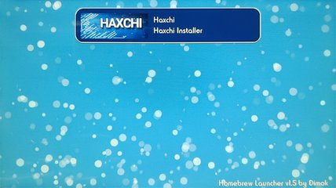
· Tener alguna carpeta haxchi en la tarjeta SD no es tener Haxchi instalado en la consola. La carpeta haxchi en la raíz de la tarjeta SD es parte del instalador (y actualizador) de Haxchi.
· Tener un icono de Haxchi en el menú de Wii U no necesariamente es tener Haxchi correctamente instalado en la consola. El icono de Haxchi en el menú de Wii U puede estar presente, pero sólo se puede comprobar si es Haxchi correctamente instalado si no requiere de algo más para abrirlo, es decir debes poder abrirlo directamente despues de encender la consola sin que salga ningún mensaje de error.
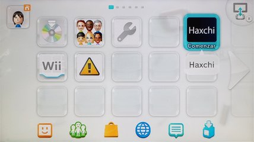
¿Tienes un icono de Haxchi (cualquiera) en el menú de Wii U?
Enciende la consola con la tarjeta SD puesta, accede al menú de Wii U, abre el icono de Haxchi y observa que ocurre en la pantalla del GamePad, no presiones ningún botón.
¿Pudiste abrir el icono de Haxchi en el menú de Wii U?
Apaga la consola.
Indexiine
Existen dos "hacks" que usan el mismo exploit del navegador. Con Webhack debes entrar en una página web y tocar en un enlace o botón para ejecutar el exploit, por otro lado, con Indexiine no necesitas entrar en ninguna página ni tocar nada ya que se ejecuta automáticamente después de unos segundos de abrir el navegador.
El exploit del navegador es un punto de entrada muy versátil ya que se puede usar para cargar cualquier aplicación homebrew. Sin embargo, también es fácil bloquear el navegador si es que se desconfiguran los ajustes correctos del propio navegador teniendo Indexiine instalado.
Para evitar confusiones debes saber que tener la aplicación Indexiine Installer en el Homebrew Launcher no es tener Indexiine instalado en la consola. La aplicación que se muestra en el Homebrew Launcher es el instalador de Indexiine, puedes tener la aplicación Indexiine Installer en el Homebrew Launcher sin tener realmente instalado Indexiine en la consola.
Enciende la consola con la tarjeta SD puesta, accede al menú de Wii U, abre el navegador de Internet y observa que ocurre en la pantalla del GamePad, espera unos segundos, no presiones ningún botón.
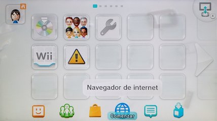
¿Al abrir el navegador carga algo especial?
Apaga la consola.
Desinstalar PayloadLoader correctamente
Necesitas los archivos más recientes de Tiramisu
- Este enlace lleva al sitio oficial: Tiramisu para tu café.
- Dentro del sitio debes tocar en el botón Download Tiramisu para iniciar la descarga de un archivo
.zip.
Instalación
- Descomprime el archivo
.zipde Tiramisu. - Copia la carpeta
wiiuy el archivoversions.jsona la raíz de la tarjeta SD. - Tu tarjeta SD debe quedar como esta imagen:
- Extrae la tarjeta SD de forma segura del dispositivo que usaste para hacer la copia de archivos e introdúcela en la ranura de la Wii U con la consola apagada.
Desactivar el arranque automático de PayloadLoader
- Enciende la consola y mantén presionado el botón X hasta que salga el EnvironmentLoader.
- Navega por el menú usando las flechas del D-Pad del GamePad, selecciona installer y presiona el botón A para iniciarlo.
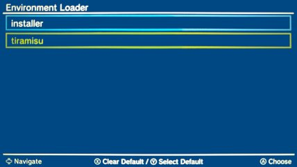 - Ahora debes estar en el PayloadLoader Installer, con la opción Check seleccionada.
- Presiona el botón A para verificar.
- El instalador debe indicar que PayloadLoader está instalado en la aplicación Health and Safety Information (Información sobre salud y seguridad).
- Usa las flechas del D-Pad del GamePad para seleccionar Boot options y presiona el botón A.
- El instalador debe indicar que el sistema de la Wii U actualmente inicia con la aplicación Health and Safety Information.
- La opción Switch back to Wii U Menu debe estar seleccionada.
- Presiona el botón A. Esto hará que Wii U Menu sea la aplicación con la que inicia la Wii U.
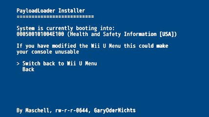 - Después de que la instalación termine, presiona botón A para apagar la consola.
Ahora el PayloadLoader no arrancará automáticamente cada que enciendas la Wii U.
Desinstalar PayloadLoader
- Enciende la consola y accede al menú de Wii U.
- Abre Información sobre salud y seguridad y mantén presionado el botón X hasta que salga el menú EnvironmentLoader.
- Navega por el menú usando las flechas del D-Pad del GamePad, selecciona installer y presiona el botón A para iniciarlo.
- Ahora debes estar en el PayloadLoader Installer, con la opción Check seleccionada.
- Presiona el botón A para verificar.
- El instalador debe indicar que PayloadLoader está instalado en la aplicación Health and Safety Information (Información sobre salud y seguridad).
- Usa las flechas del D-Pad del GamePad para seleccionar Remove y presiona el botón A.

- El instalador te pregunta si estas REALMENTE seguro de querer desinstalar PayloadLoader.
- Usa las flechas del D-Pad del GamePad para seleccionar Remove y presiona el botón A para iniciar la desinstalación.
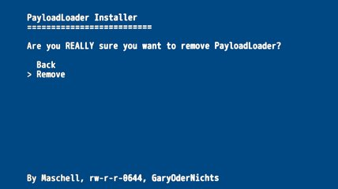 - Después de que la desinstalación termine, presiona botón A para apagar la consola.
- En este punto ya finalizaste la desinstalación de PayloadLoader.
Haz una copia de todo el contenido de la tarjeta SD en la PC (o el teléfono inteligente) y borra definitivamente el contenido de la tarjeta SD, puedes formatear la tarjeta SD para borrar absolutamente todo. Con eso ya haz desinstalado el EnvironmentLoader y Tiramisu correctamente.
Si quieres eliminar una aplicación homebrew instalada en el menú de Wii U puedes borrarla desde gestión de datos dentro de la configuración de la consola, sin ningún problema.
Con los pasos anteriores ya puedes instalar en limpio cualquier otro hack de Wii U. No es necesario que formatees la consola.
Desinstalar Webhack correctamente
Webhack no modifica nada en la consola por eso desinstalar Webhack es simplemente borrar el payload dentro de la carpeta wiiu de la tarjeta SD de la consola.
Haz una copia de todo el contenido de la tarjeta SD (en una computadora o teléfono móvil) y borra definitivamente el contenido de la tarjeta SD, puedes formatear la tarjeta SD para borrar absolutamente todo. Con eso ya haz desinstalado Webhack correctamente.
Si quieres eliminar una aplicación homebrew instalada en el menú de Wii U puedes borrarla desde gestión de datos dentro de la configuración de la consola sin ningún problema.
Con los pasos anteriores ya puedes instalar en limpio cualquier otro hack de Wii U. No es necesario formatear la consola.
Desinstalar Indexiine correctamente
Recuerda que al momento de instalar Indexiine se remplaza el archivo index.html dentro del navegador de la consola por eso desinstalar Indexiine es restaurar el archivo index.html original del navegador, después de restaurarlo puedes volver a ocupar el navegador de forma normal.
Desinstalar Indexiine se resume en ejecutar Indexiine Installer desde el Homebrew Launcher.
Si tienes acceso al Homebrew Launcher y puedes abrir aplicaciones desde ahí entonces es muy fácil desinstalar Indexiine, pero si no tienes acceso al Homebrew Launcher entonces hay que seguir un procedimiento algo más complicado.
¿Puedes abrir el Homebrew Launcher?
Desinstalar Indexiine correctamente
Aquí se asume que sabes cómo entrar en el Homebrew Launcher para iniciar aplicaciones.
Para asegurar que todo salga bien debes preparar y revisar algunos archivos en la tarjeta SD. Así que apaga la consola, saca la tarjeta SD de la Wii U y ponla a tu dispositivo (computadora o teléfono móvil) para copiar archivos.
Descarga
- Indexiine-Installer (descarga el archivo
indexiine-installer.zip). - Archivo backup-index.html (es el respaldo del archivo original del navegador).
Colocación
- Si no tienes Indexiine Installer en el Homebrew Launcher descomprime el archivo
indexiine-installer.zipy copia la carpetawiiua la raíz de la tarjeta SD.
- Revisa la carpeta
sd:/wiiu/apps/indexiine-installer. - Si tienes un archivo
backup-index.htmlen dicha carpeta entonces remplázalo con el respaldo que descargaste. - Si no tienes el archivo
backup-index.htmlen dicha carpeta entonces coloca el respaldo que descargaste.
Procedimiento de desinstalación
- Extrae la tarjeta SD de forma segura del dispositivo que usaste para hacer la copia de archivos e introdúcela en la ranura de la Wii U con la consola apagada.
- Enciende la consola y accede al menú de Wii U.
- Abre el Homebrew Launcher como ya sabes hacerlo.
- Navega por el menú del Homebrew Launcher, selecciona Indexiine Installer y toca en Load para cargar la aplicacion.
- Dentro de Indexiine Installer presiona el botón B para desinstalar Indexiine.
- Después de que la desinstalación termine regresará automáticamente al Homebrew Launcher.
- En este punto ya has desinstalado Indexiine correctamente.
Si quieres eliminar una aplicación homebrew instalada en el menú de Wii U puedes borrarla desde gestión de datos dentro de la configuración de la consola sin ningún problema.
Haz una copia de todo el contenido de la tarjeta SD (en una computadora o teléfono móvil) y borra definitivamente el contenido de la tarjeta SD, puedes formatear la tarjeta SD para borrar absolutamente todo.
Con los pasos anteriores ya puedes instalar en limpio cualquier otro hack de Wii U. No es necesario formatear la consola.
Desinstalar Indexiine correctamente
Aquí se asume que no puedes abrir el Homebrew Launcher, posiblemente tengas el navegador bloqueado (por inestabilidad de Indexiine) lo cual te impide cargar el CFW o el mismo Homebrew Launcher.
Para asegurar que todo salga bien debes preparar y revisar algunos archivos en la tarjeta SD. Así que apaga la consola, saca la tarjeta SD de la Wii U y ponla a tu dispositivo (computadora o teléfono móvil) para copiar archivos.
Descarga
- Configurable Payload (descarga el archivo
payload.elf). - Homebrew Launcher (descarga el archivo
homebrew_launcher.elf). - Indexiine-Installer (descarga el archivo
indexiine-installer.zip). - Archivo backup-index.html (es el respaldo del archivo original del navegador).
Colocación
- Descomprime el archivo
indexiine-installer.zipy copia la carpetawiiua la raíz de la tarjeta SD.
- Revisa que tengas el archivo
sd:/wiiu/apps/homebrew_launcher/homebrew_launcher.elf. - Si no lo tienes crea la carpeta
homebrew_launcherdentro de la carpetasd:/wiiu/appsy despues coloca el archivohomebrew_launcher.elfdentro de la carpetasd:/wiiu/apps/homebrew_launcher. - Revisa la carpeta
sd:/wiiu/apps/indexiine-installer. - Si tienes un archivo
backup-index.htmlen dicha carpeta remplázalo con el respaldo que descargaste. - Si no tienes el archivo
backup-index.htmlen dicha carpeta entonces coloca el respaldo que descargaste. - Revisa la carpeta
sd:/wiiu. - Si tienes un archivo
payload.cfgen dicha carpeta borralo. - Si tienes un archivo
payload.elfen dicha carpeta remplázalo con el respaldo que descargaste. - Si no tienes el archivo
payload.elfen dicha carpeta entonces coloca el respaldo que descargaste.
Procedimiento de desinstalación
- Extrae la tarjeta SD de forma segura del dispositivo que usaste para hacer la copia de archivos e introdúcela en la ranura de la Wii U con la consola apagada.
- Enciende la consola y accede al menú de Wii U.
- Abre el icono de Notificaciones (se encuentra al lado derecho del icono del navegador de internet en el menú de Wii U).
- Desplázate por la lista de notificaciones hasta la notificación Actualización de la consola y ábrela.
- Toca el icono del navegador de internet en la esquina inferior derecha.
- Toca en Sí. Esto cargará el navegador de internet.
- Saldrá un código de error. Toca en Sí y toca en la parte superior de la pantalla del GamePad para ingresar una URL.
- Introduce la URL: u.wiidb.de (puedes consultar paginas alternativas aquí).
- Al cargar la página por completo toca en HAXX, espera unos segundos, deberá cargar el Homebrew Launcher. Si no logras entrar al Homebrew Launcher, paga la consola y vuelve a intentarlo (asegúrate de haber colocado correctamente los archivos en la tarjeta SD).
FSGetMountSource falied. Please insert a FAT32 formatted sd card.quiere decir que la consola no está detectando la tarjeta SD, limpia los contactos, si estas usando una microSD cambia el adaptador. Mantén presionado el botón POWER de la consola hasta que se apague.
FSOpenFile falied. File missing /vol/external01/wiiu/payload.elf.quiere decir que la consola sí está detectando la tarjeta SD, pero no encontró el archivo
payload.elf dentro de la carpeta sd:/wiiu. Mantén presionado el botón POWER de la consola hasta que se apague.- Una vez dentro del Homebrew Launcher navega por el menú, selecciona Indexiine Installer y toca en Load para cargar la aplicacion.
- Dentro de Indexiine Installer presiona el botón B para desinstalar Indexiine.
- Después de que la desinstalación termine regresará automáticamente al Homebrew Launcher.
- En este punto ya has desinstalado Indexiine correctamente.
- Presiona el botón HOME y luego toca el botón Salir para regresar al menú de la Wii U.
Si quieres eliminar una aplicación homebrew instalada en el menú de Wii U puedes borrarla desde gestión de datos dentro de la configuración de la consola sin ningún problema.
Haz una copia de todo el contenido de la tarjeta SD (en una computadora o teléfono móvil) y borra definitivamente el contenido de la tarjeta SD, puedes formatear la tarjeta SD para borrar absolutamente todo.
Con los pasos anteriores ya puedes instalar en limpio cualquier otro hack de Wii U. No es necesario formatear la consola.
Desinstalar Haxchi correctamente
Recuerda que al momento de instalar Haxchi se inyecta dentro de un juego de Nintendo DS por eso desinstalar Haxchi es como desinstalar cualquier juego. Después de borrarlo puedes volver a descargar el juego de Nintendo DS desde la eShop y usarlo de forma normal.
- Abre el icono de Configuración de la consola.
- Entra en Gestión de datos, luego en Transferir, copiar o borrar datos.
- Selecciona Memoria de la consola, en la lista busca el icono de Haxchi.
- Selecciona el icono de Haxchi y vuelve a selecciónalo para que salga el botón Borrar.
- Toca el botón de Borrar y después el botón Sí, espera a que se borre, y después toca en Aceptar.
En este punto ya has desinstalado Haxchi correctamente.
Si quieres eliminar una aplicación homebrew instalada en el menú de Wii U puedes borrarla desde gestión de datos dentro de la configuración de la consola sin ningún problema.
Haz una copia de todo el contenido de la tarjeta SD (en una computadora o teléfono móvil) y borra definitivamente el contenido de la tarjeta SD, puedes formatear la tarjeta SD para borrar absolutamente todo.
Con los pasos anteriores ya puedes instalar en limpio cualquier otro hack de Wii U. No es necesario formatear la consola.
Desinstalar Coldboot Haxchi correctamente
Recuerda que al momento de instalar Coldboot Haxchi se remplaza el menú de Wii U por Haxchi por eso desinstalar Coldboot Haxchi es restaurar el menú de Wii U y desinstalar Haxchi después de eso puedes volver a usar la consola de forma normal.
Se asume que sabes entrar en el Homebrew Launcher para iniciar aplicaciones ya que desinstalar Coldboot Haxchi se resume en ejecutar CBHC Installer desde el Homebrew Launcher.
Debes preparar los archivos para la tarjeta SD tú mismo. Los siguientes enlaces dirigen a los lanzamientos oficiales de los desarrolladores de cada aplicación, son las versiones estables más recientes.
Descarga
- CBHC (instalador de Coldboot Haxchi, clic en el botón Download).
- Wii U NAND Dumper (clic en el botón Download).
Colocación
Nota: Los archivos info.json y manifest.install no son necesarios, los puedes omitir y eliminar sin ningún problema.
- Copia el contenido del archivo
cbhc.zipa la raíz de la tarjeta SD. - Copia el contenido del archivo
nanddumper.zipa la raíz de la tarjeta SD.
Extrae la tarjeta SD de forma segura del dispositivo que usaste para hacer la copia de archivos e introdúcela en la ranura de la Wii U con la consola apagada
- Enciende la Wii U.
- Entra en el Homebrew Launcher como ya sabes hacerlo.
Una vez dentro del Homebrew Launcher y antes de hacer cualquier modificación en la consola es obligatorio tener un respaldo de la memoria interna.
Ya tengo respaldo, continuar con la desinstalación de Coldboot Haxchi
Haz una copia de seguridad de la NAND (memoria interna) de la Wii U
¡Este paso es obligatorio si usas Coldboot Haxchi (CBHC)!
En el caso de que algo salga muy mal restaurar la copia de la memoria interna puede solucionarlo.
- Dentro del Homebrew Launcher navega por el menú usando la pantalla táctil del GamePad, selecciona Wii U NAND Dumper y toca en Load para cargar la aplicacion.
- Usa las flechas del D-Pad del Wii U GamePad para ingresar la siguiente configuración:
- Dump SLC (528MB): yes
- Dump SLCCMPT (528MB): yes
- Dump MLC (8GB/32GB): no
- Dump OTP (1KB): yes
- Dump SEEPROM (1KB): yes
- Presiona el botón A para iniciar el proceso de copia.
- Aparentemente la consola cargara el menú de Wii U, pero en unos instantes mostrara el proceso de copiado.
- Cuando se complete el proceso la consola cargará el menú de Wii U.
- Apaga la consola, saca la tarjeta SD de la Wii U y ponla a tu dispositivo (computadora o teléfono móvil) para copiar archivos.
- Copia los archivos
otp.bin,seeprom.bin,slc.binyslccmpt.binde la raíz de la tarjeta SD a una ubicación segura en tu dispositivo. - Elimina los archivos
otp.bin,seeprom.bin,slc.binyslccmpt.binen la tarjeta SD para liberar espacio. - Extrae la tarjeta SD de forma segura del dispositivo que usaste para hacer la copia de archivos e introdúcela en la ranura de la Wii U con la consola apagada.
Desinstalar Coldboot Haxchi correctamente
La desinstalación incorrecta de Coldboot Haxchi puede brickear la Wii U. Sigue al pie de la letra las siguientes instrucciones.
- Enciende la Wii U.
- Entra en el Homebrew Launcher como ya sabes hacerlo.
- Dentro del Homebrew Launcher navega por el menú usando la pantalla táctil del GamePad, selecciona CBHC y toca en Load para cargar la aplicacion.
- Usa el D-Pad del Wii U GamePad para navegar con el cursor hasta el juego en el que instalaste Haxchi anteriormente.
- Presiona el botón A y lee las advertencias.
- Presiona el botón B para desinstalar Coldboot Haxchi.
- Completada la desinstalación, tu consola cargará el menú de la Wii U.
- Reinicia la consola. Si Coldboot Haxchi se desinstaló correctamente, deberás ver que el mensaje de "CBHC" (fondo negro, letras blancas) ya no aparece al prenderla.
- Abre el icono de Configuración de la consola.
- Entra en Gestión de datos, luego en Transferir, copiar o borrar datos.
- Selecciona Memoria de la consola, en la lista busca el icono DON'T TOUCH ME.
- Selecciona el icono DON'T TOUCH ME y vuelve a selecciónalo para que salga el botón Borrar.
- Toca el botón de Borrar y después el botón Sí, espera a que se borre, y después toca en Aceptar.
En este punto ya has desinstalado Coldboot Haxchi correctamente.
Si quieres eliminar una aplicación homebrew instalada en el menú de Wii U puedes borrarla desde gestión de datos dentro de la configuración de la consola sin ningún problema.
Haz una copia de todo el contenido de la tarjeta SD (en una computadora o teléfono móvil) y borra definitivamente el contenido de la tarjeta SD, puedes formatear la tarjeta SD para borrar absolutamente todo.
Con los pasos anteriores ya puedes instalar en limpio cualquier otro hack de Wii U. No es necesario formatear la consola.
Formatear la Wii U
Avisos
- Esto eliminará todo el contenido y ajustes de la consola (juegos, archivos de guardado y cuentas de usuario), pero no restaurará archivos del sistema. Asegúrate de desinstalar correctamente cualquier hack que modifique archivos del sistema de la consola antes de formatear.
- Los juegos preinstalados estarán disponibles para volverlos a descargar en la consola sin tener que vincular un identificador de Nintendo Network.
- Los identificadores de Nintendo Network (cuentas de usuario) utilizados antes de eliminar todo el contenido y los ajustes pueden volver a utilizarse. Puedes volver a descargar sin costo alguno los programas comprados anteriormente en la eShop.
- Después de eliminar todo el contenido y los ajustes no podrás utilizar los dispositivos USB formateados por la consola. Al eliminar todo el contenido y los ajustes la Wii U genera nuevas claves de cifrado, los dispositivos USB deberán ser formateados una vez más por la consola perdiendo todo el contenido anterior.
- Formatear la Wii U no hará que la consola vuelva a una versión anterior de firmware.
- Cuando termine el proceso tendrás que volver a sincronizar el GamePad con la consola.
Procedimiento
- Desde el menú de Wii U abre Configuración de la consola.
- Desplázate hasta la última opción.
- Toca el botón Configuración de fábrica.
- Toca el botón Seguir.
- Espera unos segundos y toca el botón Continuar.
- La consola iniciara el proceso de formateo.
El formateo puede durar una hora o más. No apegues la consola.
Descarga de juegos para Wii U
Wii U USB Helper te permite descargar juegos para la Wii U en formato para WUP Installer GX2.
En esta guía veras como instalar la aplicación en tu PC, como descargar un juego con actualización y DLC, y como colocar los archivos en la tarjeta SD para que WUP Installer GX2 los reconozca.
Descargar Wii U USB Helper
Para empezar, debemos descargar el programa desde el GitHub oficial del desarrollador:
https://github.com/FailedShack/USBHelperInstaller/releases
Sólo necesitamos el ejecutable "USBHelperInstaller.exe".

Instalar Wii U USB Helper
Una vez descargado le damos doble clic para ejecutarlo.
Si sale un mensaje de advertencia le damos en el botón Ejecutar.

Estas son todas las pantallas del instalador, no hace falta cambiar ninguna cosa, básicamente dar clics:
- Next
- I Agree
- Next
- Install
- Esperar a que descargué…
- Finish
Después de darle al botón Finish deberá empezar a cargar el programa, eso tardará un momento. Si sale un mensaje del Firewall permite el acceso para el programa.
Configurar Wii U USB Helper
Si el programa ha cargado correctamente debe aparecer la ventana de bienvenida.
- Primero debes marcar la casilla para aceptar los términos donde liberas de toda responsabilidad al autor del programa.
- Clic en el botón correspondiente a la región de la consola.
- Clic al botón OK del "Disclaimer".
- Por favor selecciona la carpeta donde vas almacenar los juegos. No uses una carpeta que requiera privilegios de administrador. Clic al botón OK.
- Navegar hasta la carpeta donde quieras almacenar los juegos. Clic en el botón Seleccionar carpeta.
Después de seleccionar la carpeta deberá aparecer la ventana Ticket.
En la ventana Ticket vamos a usar el método 1 para agregar los tickets (los archivos que contienen la información necesaria para descargar cada juego).
Aquí debes ir a Google y buscar wiiu tik para encontrar una página con tickets.
Aunque aquí dejo una lista de sitios que actualmente (diciembre 2022) están en funcionamiento.
Debes escribir la URL completa. Si la página ya no está en funcionamiento o la escribes mal te saldrá un error, deberás cerrar el programa y volverlo a abrir.
Clic en el botón Ok.
Ahora empezará a cargar los tickets.
Páginas con Tickets
- https://wiiu-keys.netlify.app/
- http://vault.titlekeys.ovh/
- https://wiikeys.web.app/
Interfaz de Wii U USB Helper
Finalmente carga la interface principal, si sale un mensaje del Firewall permite el acceso para el programa.

Aquí tenemos la interface principal.

En la sección Filters puedes seleccionar los juegos según la consola para la que salieron.
Descargar juegos con Wii U USB Helper
Ahora vamos a probar descargar Breath of the Wild con actualización y DLC.
En donde indica la flecha hay un buscador, escribe "Zelda" para que se muestren todos los juegos de la saga.
Seleccionamos el juego del lado izquierdo, en el lado derecho cargará la información. Hay que darle clic al botón Add para que lo agregue a la lista de descarga.

El programa pregunta si queremos agregar la actualización del juego a la lista de descarga. Clic en el botón Yes.
Pregunta si queremos agregar el DLC del juego a la lista de descarga. Clic en el botón Yes.
El juego, la actualización y el DLC deben aparecer en la lista de descarga. Sólo falta darle clic al botón Start downloading para que empiece a descargar.

Nos mostrará una gráfica con la velocidad de descarga y un tiempo estimado de descarga. Puedes pausar la descarga en cualquier momento, cerrar el programa y retomar la descarga cuando gustes.
Ya descargado el juego nos aparecerá en el apartado de juegos descargados (el juego engloba su actualización y DLC).
Transferir juegos a la tarjeta SD
Vamos a la carpeta donde descargamos el juego, DLC o actualización.
En WUP Installer GX2 sólo podemos ver carpetas que tengan NUS Content cifrado (archivos title.cert, title.tik, title.tmd, *.app y *.h3) y que tengan nombres sin caracteres especiales como acentos (usa sólo letras, números y espacios para nombrar las carpetas). Por eso, para evitar conflictos y confusiones es mejor renombrar las capetas después de copiar cada una a la carpeta install de la tarjeta SD.

En esté ejemplo sería de la siguiente forma:
- La carpeta
The Legend of Zelda Breath of the Wild [00050000101C9400]dentro deDLCSla copiamos a la carpetainstallde la tarjeta SD y la renombramos comoBreath of the Wild DLC. - La carpeta
The Legend of Zelda Breath of the Wild [00050000101C9400]dentro deGAMESla copiamos a la carpetainstallde la tarjeta SD y la renombramos comoBreath of the Wild Game. - La carpeta
The Legend of Zelda Breath of the Wild [00050000101C9400] (v208)dentro deUPDATESla copiamos a la carpetainstallde la tarjeta SD y la renombramos comoBreath of the Wild Update.
Así deben quedar las carpetas dentro de la carpeta install de la tarjeta SD (no las metas en subcarpetas porque WUP Installer GX2 no las reconocerá).

Instalar juegos con WUP Installer GX2
Con el juego en la carpeta install de la tarjeta SD ya podemos colocar la tarjeta SD en la Wii U, pender la consola y abrir WUP Installer GX2 por el método que tengamos (Webhack, Haxchi, Indexiine o Coldboot Haxchi).
WUP Installer GX2 lo puedes abrir desde el Homebrew Launcher.
Dentro de WUP Installer GX2 sólo podemos ver las carpetas que tengan archivos title.cert, title.tik, title.tmd, *.app y *.h3 (y con nombres sin caracteres especiales) que estén dentro de la carpeta install de la tarjeta SD.

Para evitar errores podemos instalar una cosa a la vez, primero debemos instalar el juego base "Breath of the Wild Game", después la actualización "Breath of the Wild Update" y finalmente el DLC "Breath of the Wild DLC". El juego base, la actualización y el DLC deben ser de la misma región entre sí y deben ser instalados en la misma memoria para no tener conflictos.
- Utiliza la pantalla táctil para seleccionar Breath of the Wild Game.
- Presiona Install y confirma con Yes.
- Selecciona NAND si quieres instalar en la memoria interna de la Wii U, selecciona USB si quieres instalar en el dispositivo USB formateado por la Wii U.
- Ya instalado repite los pasos anteriores para instalar la actualización y el DLC.
- Finalizado el proceso de instalación presiona el botón Home para regresar al menú de la Wii U.
Una vez instalado todo podemos regresar al menú principal de la consola presionando el botón Home del GamePad. El icono del juego deberá estar junto a los demás en el menú.
Nota 1: Si al abrir un juego te pide actualizar la consola puedes hacerlo sin ningún riesgo (algunos juegos indican la actualización propia como actualización de la consola), no pierdes el hack que tengas ni los juegos ya instalados.
Nota 2: Podemos borrar las carpetas que tenemos en de la carpeta install después de instalar el juego para liberar espacio en la tarjeta SD.
Personalizar Haxchi
La estructura de archivos del instalador de Haxchi se divide en dos capetas.
sd:/wiiu/apps/haxchiContiene el instalador en sí mismo (haxchi.elf).sd:/haxchiContiene los archivos de imagen y configuración que se inyectarán en el juego de DS.
Editar el archivo de configuración (config.txt)
Esté archivo se puede editar con el Bloc de notas, cada línea corresponde a un atajo de botón y tiene la estructura:
Botón=Ruta/De/Aplicación.elf
Los botones disponibles son:
a, b, x, y, left, right, up, down, zl, zr, l, r, plus, minus y default.
Donde default es cuando no presionas ningún botón.
Las rutas de aplicación tienen como base la raíz de la tarjeta SD. Si tienes una aplicación homebrew miapp.elf en la raíz de la tarjeta SD puedes hacer un atajo así:
x=miapp.elf
La ruta especial sysmenu es la que permite aplicar el CFW interno de Haxchi.
Por ejemplo:
Con esa configuración:
- Si no presionas ningún botón cargará el CFW interno de Haxchi y regresará al menú de la Wii U.
- Si presionas el botón A del GamePad cargará el Homebrew Launcher.
- Si presionas B cargará WUP Installer GX2.
- Si presionas X cargará HID to VPAD.
- Si presionas Y cargará Spiik.
- Si presionas L cargará sign_c2w_patcher.
- Si presionas R cargará SWAP DRC Lite.
Editar el archivo de título (title.txt)
Al igual que el archivo de configuración esté archivo se puede editar con el Bloc de notas. Cuando pasas sobre el icono de Haxchi, verás su título personalizado. Puedes usar esto para recordar los accesos directos que configuraste o simplemente para poner el texto que quieras.
Por ejemplo:
Editar el archivo del icono (iconTex.tga)
Este archivo lo puedes editar con Photoshop. Puedes usar cualquier imagen como icono, incluso con transparencia, pero debes respetar dos cosas:
- La imagen debe ser de 128x128 pixeles, ni uno más, ni uno menos.
- Debes guardar la imagen en formato Targa (
.tga) a 32 bits por pixel, sin ningún tipo de compresión.

Editar el archivo de imagen para la TV (bootTvTex.tga)
Este archivo lo puedes editar con Photoshop. Puedes usar cualquier imagen, pero en esté caso el resultado no debe tener transparencia de fondo, debes respetar dos cosas:
- La imagen debe ser de 1280x720 pixeles, ni uno más, ni uno menos.
- Debes guardar la imagen en formato Targa (
.tga) a 24 bits por pixel, sin ningún tipo de compresión.
Editar el archivo de imagen para el GamePad (bootDrcTex.tga)
Este archivo lo puedes editar con Photoshop. Igual que la imagen para TV, puedes usar cualquier imagen, pero el resultado no debe tener transparencia de fondo y debes respetar dos cosas:
- La imagen debe ser de 854x480 pixeles, ni uno más, ni uno menos.
- Debes guardar la imagen en formato Targa (
.tga) a 24 bits por pixel, sin ningún tipo de compresión.
Aplicar la personalización
Para cambiar la configuración de Haxchi no es necesario desinstalar y reinstalar todo. Simplemente debes reinstalar Haxchi, el instalador inyectará la nueva configuración e imágenes en el juego de DS, luego bastará con reiniciar la consola para probar los cambios.
Con la tarjeta SD preparada con los archivos personalizados.
- Carga el Homebrew Launcher como sabes hacerlo.
- Navega a través del Homebrew Launcher y abre Haxchi.
- Usa el D-Pad del Wii U GamePad para navegar con el cursor hasta el juego en el que deseas inyectar Haxchi.
- Presiona el botón A para instalar Haxchi.
- Completada la instalación, la consola cargará el menú de la Wii U.
Personalizar Payload
Los archivos de Configurable Payload son dos.
sd:/wiiu/payload.elfEs el payload en sí mismo.sd:/wiiu/payload.cfgEs el archivo de configuración del payload.
Editar el archivo de configuración (payload.cfg)
Este archivo se puede editar con el Bloc de notas, cada línea corresponde a un atajo de botón y tiene la estructura:
Botón=Ruta/De/Aplicación.elf
Los botones disponibles son:
a, b, x, y, left, right, up, down, zl, zr, l, r, plus, minus y default.
Donde default es cuando no presionas ningún botón.
Las rutas de aplicación tienen como base la raíz de la tarjeta SD. Si tienes una aplicación homebrew miapp.elf en la raíz de la tarjeta SD puedes hacer un atajo así:
x=miapp.elf
Por ejemplo:
Con esa configuración:
- Si no presionas ningún botón cargará Mocha CFW.
- Si presionas el botón A del GamePad cargará el Homebrew Launcher.
- Si presionas B cargará WUP Installer GX2.
- Si presionas X cargará HID to VPAD.
- Si presionas Y cargará Spiik.
- Si presionas L cargará sign_c2w_patcher.
- Si presionas R cargará SWAP DRC Lite.
Aplicar la personalización
La nueva configuración del Payload funcionará la siguiente vez que inicies la consola con la tarjeta SD preparada con el archivo personalizado y ejecutes Indexiine o Webhack.
Glosario
Hack: Modificación del funcionamiento de un objeto o sistema. Para realizar un hack en la Wii U se requiere ejecutar un exploit que permita cargar un CFW o que permita cargar un Environment.
Exploit: Vulnerabilidad de seguridad explotable (aprovechable) de un sistema informático. Ejemplos de exploits de Wii U son:
- JsTypeHax.
- Contenthax.
- FailST (permite instalar un tipo de Contenthax 2.0).
- MK8 exploit.
- BluUBomb.
Punto de entrada: Es el procedimiento que tienes que hacer cada que enciendes la Wii U para establecer el hack en la consola. El punto de entrada ejecuta un exploit que permite acceder a los recursos de un sistema. Ejemplos de puntos de entrada de Wii U son:
- Webhack (usa una versión mejorada de JsTypeHax).
- Indexiine (usa una versión mejorada de JsTypeHax).
- Haxchi (es un tipo de Contenthax).
- Coldboot Haxchi (es un derivado de Haxchi).
- PayloadLoader (es un tipo de Contenthax 2.0, factible gracias a FailST).
- Autobooting PayloadLoader (es un derivado de PayloadLoader).
Firmware (FW): Software que controla directamente al hardware. Es la parte del sistema de la consola que se encarga de las funciones básicas, por ejemplo, la validación de tickets de los juegos. Sobre el firmware se construyen los drivers, programas de usuario o el sistema operativo de la consola.
Custom Firmware (CFW): Firmware personalizado (custom) hecho por desarrolladores independientes, permite habilitar o agregar funciones no soportadas por el firmware original admitiendo, por ejemplo, validar tickets falsos. Ejemplos de CFW para Wii U son:
- Mocha CFW.
- SigPatcher.
- IOSUHAX.
- Haxchi CFW (Haxchi comes with its own sysnand CFW included).
Environment (entorno): En Wii U se refiere a las aplicaciones que se cargan y ejecutan para dar funcionalidad a la consola. Por ejemplo, el entorno por defecto de Wii U consiste en su firmware de original, aplicaciones oficiales en segundo plano y el menú de Wii U. Un entorno hecho por desarrolladores independientes puede cumplir el mismo propósito que un CFW, pero además cuenta con módulos, plugins y bibliotecas que trabajan en conjunto ofreciendo funciones que el sistema de la consola no ofrece originalmente. Ejemplos de Environments para Wii U son:
Homebrew: Software "hecho en casa" por desarrolladores independientes, suele requerir de un hack para ser ejecutado ya que no cuenta con certificación del fabricante del hardware.
Payload: Carga útil o código que se ejecuta al provocar un exploit, sin la carga útil no se realiza ninguna acción. Un mismo exploit puede utilizar varios payloads y un payload puede ser utilizado por varios exploits.
Ticket: Contiene la firma de validación de un software en la Wii U, entre otras cosas, sin esa clave la Wii U no puede ejecutar el software, a menos que previamente se le aplique un hack a la consola.
Brick: Literalmente ladrillo en inglés. Se refiere a dañar un dispositivo al punto de sólo servir como pisapapeles.
Downloadable Content (DLC): Contenido descargable, se refiere al material adicional creado por los desarrolladores de un videojuego y que se publica por separado, no incluido en el producto base.
Title ID: El identificador de título es un número de 16 dígitos que usa la Wii U para reconocer un juego o aplicacion en su sistema de archivos. El Title ID se usa para asignar una carpeta a un juego o aplicación. Los primeros 8 dígitos identifican el tipo de contenido (juego, DLC, demo, actualización, aplicación del sistema, etc.).
Según las definiciones anteriores y simplificando las cosas un hack de Wii U es la suma de un "punto de entrada" y un CFW. Un hack de Wii U también es la suma de un "punto de entrada" y un Environment. Sin un punto de entrada no puedes cargar un CFW. Así que un CFW por sí mismo no es un hack de Wii U. A continuación, una lista de los principales hacks de Wii U:
- Webhack + Mocha CFW
- Webhack + IOSUHAX
- Webhack + SigPatcher
- Indexiine + Mocha CFW
- Indexiine + IOSUHAX
- Indexiine + SigPatcher
- Haxchi + Haxchi CFW
- Haxchi + Mocha CFW
- Haxchi + IOSUHAX
- Haxchi + SigPatcher
- Coldboot Haxchi (CBHC) + Haxchi CFW
- Coldboot Haxchi (CBHC) + Mocha CFW
- Coldboot Haxchi (CBHC) + IOSUHAX
- Coldboot Haxchi (CBHC) + SigPatcher
- PayloadLoader + Tiramisu (Tiramisu de arranque manual)
- PayloadLoader + Aroma (Aroma de arranque manual)
- Autobooting PayloadLoader + Tiramisu (Tiramisu de arranque automático)
- Autobooting PayloadLoader + Aroma (Aroma de arranque automático)
Preguntas frecuentes
¿Hackear la Wii U tiene algún riesgo de baneo?
¿Hay algún riesgo si tengo un hack y actualizo la consola?
¿Puedo realizar el hackeo desde una memoria USB en lugar de la tarjeta SD?
¿Puedo instalar juegos desde una memoria USB en lugar de la tarjeta SD?
¿Qué tarjeta SD se recomienda?
¿Es necesario hackear la consola para instalar juegos en un dispositivo USB externo?
¿Puedo usar una memoria USB como dispositivo USB externo para almacenar juegos?
¿Qué disco duro se recomienda como dispositivo USB externo para almacenar juegos?
¿Qué es un dispositivo USB formateado por la Wii U?
¿Puedo usar dos dispositivos USB externos para almacenar juegos de Wii U?
¿Puedo usar el dispositivo USB que usaba en la Wii y que ya tiene juegos de Wii en la Wii U?
¿La Wii U puede leer discos piratas?
¿Puedo instalar un hack sin el GamePad de la consola?
¿Puedo cargar juegos de Wii U desde la tarjeta SD?
¿En qué formato están los juegos de Wii U?
¿Cómo puedo eliminar un usuario (NNID) de la consola si no tengo la contraseña de ese usuario?
¿Hackear la Wii U tiene algún riesgo de baneo?
Actualmente, hackear la Wii U no supone riesgo de baneo, puedes jugar en línea y usar la eShop sin problema aun teniendo la consola hackeada. Sólo no debes usar aplicaciones como TCPGecko (cheats o trampas) o SDCafiine (mods) en modos de juego en línea.
¿Hay algún riesgo si tengo un hack y actualizo la consola?
No. Puedes actualizar la Wii U y los juegos sin preocupación. De hecho, es recomendable actualizar a la última versión tanto del sistema la consola como de los juegos.
¿Puedo realizar el hackeo desde una memoria USB en lugar de la tarjeta SD?
No. Por defecto la Wii U usa la tarjeta SD, este comportamiento sólo se puede cambiar temporalmente después de aplicar un hackeo.
¿Puedo instalar juegos desde una memoria USB en lugar de la tarjeta SD?
Sí. Sin embargo, es más complicado que instalar juegos desde la tarjeta SD.
¿Qué tarjeta SD se recomienda?
Si bien la Wii U soporta tarjetas SD de hasta 2 TB, se recomienda una tarjeta SD de 32 GB ya que los juegos más pesados tienen un tamaño de 20 GB.
Si sólo vas a ejecutar aplicaciones homebrew, una tarjeta SD de 4 GB basta y sobra.
Si vas a usar emuladores (RetroArch, etc.) posiblemente necesites espacio adicional, dependiendo de tu colección de ROMs.
Para ejecutar mods de juegos (SDCafiine) 8 GB bastan.
Evita las tarjetas SD de clase 4, de preferencia usa tarjetas SD de clase 10.
Las marcas recomendadas son: SanDisk o Samsung.
¿Es necesario hackear la consola para instalar juegos en un dispositivo USB externo?
No. Una Wii U sin hack o con cualquier hack puede tener juegos instalados en un disco duro externo.
Los juegos legales se instalan desde la eShop, las copias de juegos se instalan usando una aplicación homebrew llamada WUP Installer GX2.
¿Puedo usar una memoria USB como dispositivo USB externo para almacenar juegos?
Sí, pero se recomienda un disco duro sobre una memoria USB ya que las memorias USB tarde o temprano terminan teniendo errores de lectura. El tiempo que tardan en presentar fallos depende de la calidad de la memoria.
¿Qué disco duro se recomienda como dispositivo USB externo para almacenar juegos?
Si bien la Wii U soporta discos duros de hasta 2 TB, se recomienda uno acorde a los juegos que vayas a jugar frecuentemente, considera que los juegos más pesados tienen un tamaño de 20 GB.
Si quieres tener 250 juegos, un disco duro de 750 GB basta y sobra. Ten en cuenta que el menú de la Wii U tiene un límite de 300 iconos incluyendo los que se encuentran dentro de carpetas.
Se recomienda el uso de discos duros externos con su propia fuente de alimentación.
Los discos duros que se alimentan a través de un solo puerto USB, no son recomendables para su uso ya que un solo puerto USB de la Wii U no da la corriente necesaria para mover el motor del disco. Para ese tipo de discos duros externos es obligatorio usar un cable Y (Y-cable o splitter cable).
Toma en cuenta que los discos duros externos internamente son idénticos a los discos duros internos de PCs y Laptops, por lo que únicamente cambia la carcasa (enclosure, case, shell o gabinete) que los protege.
Sobre la versión de USB, no importa si el disco duro externo tiene conexión USB 3, esta versión es compatible con los puertos USB 2 de la Wii U, simplemente no se aprovecharán las altas velocidades de la versión USB 3.
Las marcas recomendadas son: Western Digital, Seagate o Toshiba.
¿Qué es un dispositivo USB formateado por la Wii U?
Es un dispositivo USB que no puede ser leído por ningún aparato excepto por la Wii U que la formateó originalmente. Si alguna vez quieres usarlo con otra consola Wii U o en cualquier otro aparato, tendrás que reformatearlo.
No importa el formato original del dispositivo USB (NTFS, FAT32, exFAT, etc.), al conectarlo a la Wii U, está le da un formato único (cifrado) apropiándose de todo el espacio de almacenamiento.
¿Puedo usar dos dispositivos USB externos para almacenar juegos de Wii U?
Sí, pero no puedes usarlos simultáneamente.
Si conectas dos dispositivos USB externos al mismo tiempo, la Wii U entra en modo trasferencia para mover datos entre un dispositivo y otro. Debes conectar sólo un dispositivo USB externo a la vez.
¿Puedo usar el dispositivo USB que usaba en la Wii y que ya tiene juegos de Wii en la Wii U?
Sí, la Wii U cuenta con el modo virtual Wii que se puede hackear para usar un Loader como en una Wii normal. Adicionalmente se puede ocultar el dispositivo USB que ya tiene juegos de Wii para que la Wii U no pida formatearlo en cada reinicio usando UStealth. No podrás usar ese dispositivo USB para almacenar juegos de Wii U.
¿La Wii U puede leer discos piratas?
No. La Wii U sólo puede leer discos originales de Wii y Wii U.
¿Puedo instalar un hack sin el GamePad de la consola?
No. El GamePad es indispensable para la Wii U.
¿Puedo cargar juegos de Wii U desde la tarjeta SD?
Sí. Usando la aplicación Loadiine GX2 puedes cargar juegos desde la tarjeta SD, pero no todos los juegos funcionan correctamente debido a que los tiempos de carga aumentan considerablemente.
Lo mejor es instalar los juegos en la memoria interna de la consola o en un disco duro externo.
¿En qué formato están los juegos de Wii U?
El formato más común es el NUS Content cifrado (archivos title.cert, title.tik, title.tmd, *.app y *.h3) usado por WUP Installer GX2.
Existen otros formatos como el NUS Content descifrado (carpetas code, content y meta) usado por la aplicación Loadiine y el emulador CEMU, el formato WUD (Wii U Disc image) y el formato WUX (Wii U Compressed image).
¿Cómo puedo eliminar un usuario (NNID) de la consola si no tengo la contraseña de ese usuario?
La única forma de eliminar un usuario en esas condiciones es formateando la consola.
Homebrew destacado
Homebrew Launcher Permite cargar aplicaciones "hechas en casa" por desarrolladores independientes para la Wii U, colocadas en la carpeta sd:/wiiu/apps.
Homebrew Channel Permite cargar aplicaciones "hechas en casa" por desarrolladores independientes para la Wii (usa el modo virtual Wii de la Wii U). vWii Compat Installer facilita instalar el Homebrew Channel en el modo virtual Wii de la Wii U.
Homebrew App Store Permite descargar homebrew de la Wii U directamente usando la consola.
WUP Installer GX2 Wii U Public title Installer es un instalador de contenido para la Wii U. El contenido (juegos, aplicaciones, multimedia, etc.) debe estar en formato NUS Content cifrado, archivos .app, .h3, title.cert, title.tmd, title.tik.
SaveMii mod WUT Port Gestor de archivos de guardado de juegos de Wii U y de Wii.
NUSspli Permite descargar e instalar juegos de forma rápida y simple directamente usando la Wii U.
Bloopair Permite conectar de forma inalámbrica los controles Bluetooth más populares. Consulta el hilo oficial de la aplicación para más detalles.
Nintendont Funciona como un "parche" que permite que los juegos de GameCube sean identificados como juegos de Wii logrando que carguen en el modo virtual Wii de la Wii U. El enlace anterior lleva a la última versión de Nintendont, archivo boot.dol solamente, aquí puedes descargar un paquete con todos los archivos importantes para una instalación completa.
Retroarch No es un emulador en sí. Es un proyecto modular que sirve de envoltura para cargar diferentes núcleos emuladores y que tiene versiones para una gran cantidad de plataformas (incluida la Wii U).
Spiik Facilita ajustar la configuración de región e idioma para que los juegos carguen en el idioma deseado.
Padcon Habilita el botón "R3" para encender y apagar la pantalla del GamePad. La pantalla táctil sigue funcionando, sólo la visualización de la pantalla se desactiva para ahorrar batería cuando no se necesita.
WiiU-Shell Administrador de archivos para la Wii U.
UFDiine Wii U Update Folder Deleter permite eliminar o crear la carpeta update del sistema de la Wii U (vol/storage_mlc01/sys/update), esto bloquea o habilita la descarga de actualizaciones del sistema de la Wii U.
USBHide Esta aplicación detiene el mensaje de la Wii U pidiendo formatear un dispositivo USB. Para lograrlo modifica un valor en el dispositivo USB a ocultar.
Sign C2W Patcher Su principal uso es habilitar el overclock del modo virtual Wii de la Wii U.
Wii U Plugin System Permite cargar múltiples complementos en la Wii. Por ejemplo, puedes aplicar mods en los juegos (SDCafiine), usar un control USB (HID to VPAD), intercambiar la visualización la TV y el GamePad (Swip Swap Me) y mucho más.
SDCafiine Permite usar mods en algunos juegos de Wii U. Puedes ir a esté enlace para obtener mods y más información al respecto. Puedes ir a esté enlace para obtener mods y más información al respecto. Revisa aquí el complemento para Wii U Plugin System.
HID to VPAD Permite conectar controles de otras compañías vía USB a la Wii U. Cada modelo de control debe tener su archivo de configuración .ini para que la aplicación lo reconozca. Más información aquí. Revisa aquí el complemento para Wii U Plugin System.
SwapDRC Lite Permite intercambiar la visualización entre la TV y el GamePad. Revisa aquí un complemento para Wii U Plugin System.
Wii U NAND Dumper Permite hacer respaldos de las memorias internas de la Wii U. Es muy importante tener al menos un respaldo del SLC, del SLCCMPT, del OTP y del SEEPROM de la consola.
vWii NAND Restorer Permite restaurar el modo vWii con la copia de seguridad de la NAND.
vWii Decaffenaitor Permite restaurar el modo vWii sin necesidad de una copia de seguridad de la NAND. La aplicación se aprovecha del hecho de que la Wii U vuelve a descargar archivos faltantes del modo vWii al realizar una actualización del sistema. Entonces, la aplicacion elimina los archivos que se pueden volver a descargar y fuerza una actualización del sistema.
FTPiiU_Everywhere Permite leer y trasferir archivos a la consola por medio de FTP. La versión Everywhere permite acceder a archivos del sistema por lo que sólo se recomienda a usuarios avanzados.
WiiU FTP Server Es un a servidor FTP robusto y optimizado para Wii U. Permite leer y trasferir archivos a la consola por medio de FTP. Sólo se recomienda a usuarios avanzados.
OurLoader Cargador region free de discos de juego de Wii U. Permite jugar discos de juegos de una región diferente a la región de la consola.
Disc2App Permite volcar el contenido de un disco de juego de Wii U a la tarjeta SD (FAT32) o aun dispositivo USB (FAT32), el volcado se hace en formato NUS Content cifrado (archivos .app, .h3, title.cert, title.tmd, title.tik).
WUDD Wii U Disc Dumper sirve para volcar el contenido de un disco de juego de Wii U a la tarjeta SD (FAT32) o aun dispositivo USB (NTFS), el volcado puede ser en formato WUD, WUX o NUS Content cifrado (archivos .app, .h3, title.cert, title.tmd, title.tik).
Dumpling Permite volcar el contenido de un disco de juego de Wii U y juegos instalados en digital en la consola a la tarjeta SD (FAT32) o aun dispositivo USB (FAT32), el volcado se hace en formato descifrado (carpetas code, content y meta).
Loadiine GX2 Permite cargar juegos desde la tarjeta SD. No se recomienda como método principal de carga de juegos ya que los tiempos de carga son mucho mayores y no todos los juegos funcionan correctamente.
Moonlight Wii U Permite hacer streaming de juegos desde una PC a la Wii U, requiere de una tarjeta GTX o RTX en la PC.
NTRView Permite hacer streaming de juegos desde una New 3DS a la Wii U, requiere de una N3DS, N3DS XL o N2DS XL.
Homebrew para Aroma
WUP Installer GX2 Wii U Public title Installer es un instalador de contenido para la Wii U. El contenido (juegos, aplicaciones, multimedia, etc.) debe estar en formato NUS Content cifrado, archivos .app, .h3, title.cert, title.tmd, title.tik.
SaveMii mod WUT Port Gestor de archivos de guardado de juegos de Wii U y de Wii.
WiiU-Shell Administrador de archivos para la Wii U.
UFDiine Wii U Update Folder Deleter permite eliminar o crear la carpeta update del sistema de la Wii U (vol/storage_mlc01/sys/update), esto bloquea o habilita la descarga de actualizaciones del sistema de la Wii U.
WUDD Wii U Disc Dumper sirve para volcar el contenido de un disco de juego de Wii U a la tarjeta SD (FAT32) o aun dispositivo USB (NTFS), el volcado puede ser en formato WUD, WUX o NUS Content cifrado (archivos .app, .h3, title.cert, title.tmd, title.tik).
NTRView Permite hacer streaming de juegos desde una New 3DS a la Wii U, requiere de una N3DS, N3DS XL o N2DS XL.
GiveMiiYouTube Este plugin hace que la solicitud de servicio de la aplicación de YouTube devuelva siempre el éxito y, por lo tanto, permite que la aplicación de YouTube continúe funcionando.
re_nfpii Es un módulo y un plugin que tiene por objetivo la investigación y la emulación de amiibo. ¡Es todavía experimental y está en progreso de desarrollo! Consulta la lista de compatibilidad para ver los juegos que funcionan. Las figuras oficiales actualmente no se pueden usar mientras el módulo está cargado. Coloca los .bin de los amiibo en la carpeta sd:/wiiu/re_nfpii, por ejemplo: sd:/wiiu/re_nfpii/Peach.bin. Recuerda que abres el menú de plugins con L + Abajo + SELECT.
Acerca de esta guía
Versión: 4.11 (21 de diciembre de 2022)
Esta guía fue hecha por Fran AC basado en la guía de los miembros de Nintendo Homebrew Discord Server.
Puedes descargar la guía completa desde esté enlace.
Créditos a los desarrolladores de las herramientas
- Team Twiizers por Homebrew Channel
- orboditilt y dimok789 por Homebrew Launcher Installer.
- dimok789 por Homebrew Launcher, Homebrew Launcher Channel, y Mocha CFW.
- JumpCallPop, jam1garner, hedgeberg, yellows8 y orboditilt por JsTypeHax.
- Jonhyjp por Indexiine.
- FIX94 y smealum por Haxchi y CBHC.
- vgmoose, pwsincd, rw-r-r_0644, crc32 y Compucat por hb-appstore.
- dimok789, n1ghty, Maschell y dibas por Loadiine GX2.
- djskual, Loadiine GX2 Team, Yardape y brienj por WUP Installer GX2.
- koolkdev por Wii U NAND Dumper.
- koolkdev y Maschell por Wii U NAND Dumper payload.
- dimok789 por wupclient.py.
- FIX94 por Wuphax.
- dragbe y FIX94 por d2x cIOS Installer.
- TheLordScruffy y GaryOderNichts por vWii Compat Installer.
- Maschell y GaryOderNichts por AutobootModule.
- GaryOderNichts por Configurable Payload, Indexiine-Installer, UFDiine, vWii Decaffeinator, DumpsterU, Bloopair y las versiones controller mod del Homebrew Launcher, WUP Installer GX2 y SaveMii.
- GabyPCgeeK y Ryuzaki-MrL por SaveMii Mod.
- Maschell por HID to VPAD, Wii U Plugin System, CustomRPXLoader, FailST, EnvironmentLoader, HBLInstallerWrapper, LaunchInstaller, MochaPayload, PayloadFromRPX, PayloadLoaderInstaller, PayloadLoaderInstallerEnvironment, PayloadloaderPayload, Tiramisu Downloader y Aroma Downloader.
- Chadderz y Maschell por SDCafiine.
- OatmealDome y Yahya14 por SwapDRC Lite.
- ::Phoenix:: por Spiik.
- dimok789 por FTPiiU.
- dimok789 y FIX94 por sign_c2w_patcher.
- FIX94, Howard, JoostinOnline, Crediar y greyrogue por Nintendont.
- Libretro Team por RetroArch.
- Hikari06 y FailedShack Team por Wii U USB Helper.
- Maschell y Olmectron por JNUSTool MOD.
- V10lator, Poke303, E1ite007 y QuarkTheAwesome por NUSspli.